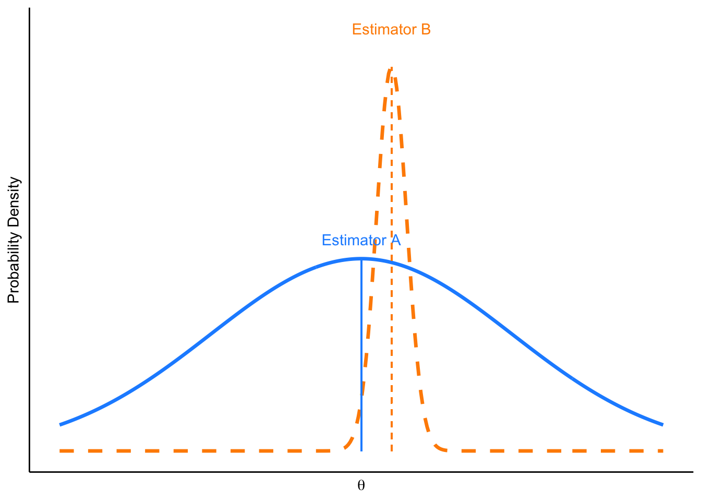
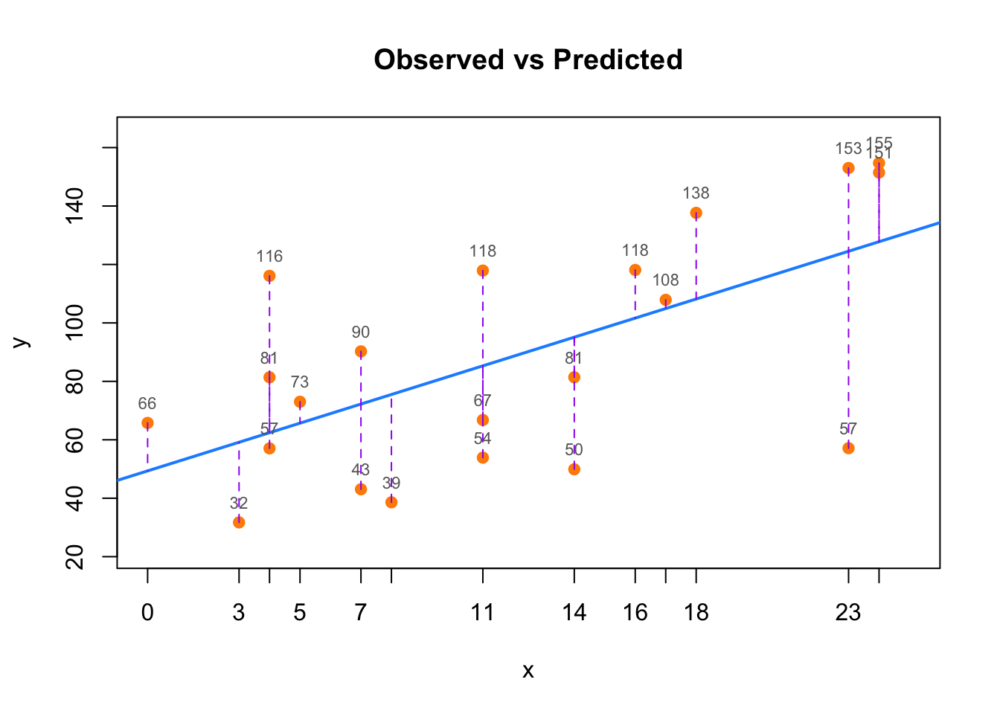

Chapter 4 Error
Many inquiries in economics, social sciences, and health sciences are centered around gaining insights about a population. ‘Population’ in this context refers to the complete set of individuals, events, or objects of interest in a study, encompassing all members or occurrences that meet specified criteria. The process of learning from this population can broadly be divided into two categories: estimation and hypothesis testing. Estimation involves determining the value of various population parameters, including the average (mean), variance, standard deviation, median, proportion, range, skewness, and kurtosis. Additionally, estimation also encompasses the calculation of correlation, covariance, and model coefficients. These are crucial for quantifying the relationships between different variables in a model. On the other hand, hypothesis testing is a statistical method used to assess the strength of evidence against a null hypothesis, typically comparing it with an alternative hypothesis. It involves statistically determining whether the observed data deviates significantly from what would be expected under the null hypothesis, thereby providing insights into the likelihood of the occurrence of a specific event or characteristic within the population. This process is fundamental in validating or challenging existing theories and assumptions about the characteristics and behaviors of the the population. While hypothesis testing and estimation provide foundational methods for understanding populations, it is equally vital to consider the role of error in these processes, as it significantly influences the accuracy and reliability of our statistical and machine learning models.
In statistics and machine learning, error refers to the discrepancy between a calculated, estimated, or predicted value and the true or actual value. This encompasses estimation error, where estimations deviate from reality due to model limitations or assumptions; measurement errors, arising from inaccuracies in data collection; sampling errors, due to discrepancies between a sample and the overall population; and Type I and II errors in hypothesis testing, which are false positives and false negatives, respectively. In statistics, errors are often part of the model itself, such as the error term in a linear regression model, representing the part of the data that can’t be explained by the estimation model. Sampling error arises because the sample may not perfectly represent attributes of the population, leading to differences between the true unknown parameters of a population and the observed sample statistics. In machine learning, prediction error is the difference between predicted values and the actual values of a model. Prediction error is crucial for evaluating model performance, encompassing two types: training error, which occurs on the training dataset and reflects learning accuracy of the mode; and generalization error (or test error), which is observed on new, unseen data, indicating the effectiveness of the model in applying its learning to different scenarios. Minimizing both types of error is key to developing accurate and reliable machine learning models. Model error is the discrepancy between the assumptions of the model and the real-world data it is trying to represent. Model error can occur due to incorrect model assumptions, oversimplification, or failure to capture complex relationships in the data. Algorithmic error arises due to the limitations or biases in the algorithms used for data processing and analysis. Additionally, errors in statistical and machine learning models are often categorized into irreducible and reducible errors. Irreducible error, inherent in any dataset, is the noise that cannot be eliminated by any model, while reducible error is due to the model’s inability to capture the true underlying pattern and can be minimized with better modeling techniques. Understanding and minimizing these errors, if possible, is crucial for effective and ethical decision-making based on data analytics, statistics, and machine learning. Throughout this book, we will explore all these various types of errors fundamental to statistics and machine learning. In this chapter, we’ll focus on estimation error, a cornerstone of statistical analysis, and prediction error, particularly in in-sample or training data, which forms the basis of machine learning.
Assume you’re interested in determining the average years of schooling among residents in your city and also understanding the effect of schooling on income. Collecting this data directly from every individual who constitutes the population of the city is often impractical. A more feasible approach is to gather data from a subset of people, say those passing through a main street, and use this as a sample to estimate the average years of schooling (using method of moments estimators) and estimating the effect of education on income (using OLS to estimate coefficient). For simplicity, assume the subset of people you gather information, your sample, is random and representative of the population. The estimated average, derived from your sample, i.e. realized data,represents an attempt to infer a population parameter - in this case, the mean years of schooling. Using the data from your sample, you can find the the correlation between education and income as well as analyze how schooling effects income by estimating the coefficient in an ordinary linear regression model (with the assumptions we will discuss below). In this specific example, you can estimate the average years of schooling, as well as the correlation between education and income, and the regression coefficient of education on income.
The process of deriving any of these method of moment and coefficient estimates involves selecting an estimator - a statistical method or rule for estimating the unknown population parameter. While the estimator remains unchanged regardless of the sample obtained, and ideally needs to be specified before any sampling carried out, the specific estimate varies with each different sample collected. The ideal scenario is when the estimate from your sample aligns perfectly with the true, but unknown, population parameter. Since the actual parameter is never truly known, statistical properties are used to justify the assumption that your estimate nearly equal to this parameter. Main assumption/requirement of this process is obtaining a representative sample and identifying an unbiased estimator. Even among unbiased estimators, questions arise about which is the ‘best’. This leads us to the concept of estimation error. For instance, the difference between the estimated average schooling and the actual average schooling of the population, or the coefficient which indicates the return of schooling on income. Estimation error is a key aspect of statistical analysis in trying to approximate a population parameter.
Similarly, when using the gathered data to predict an individual’s or a group’s years of schooling, the process will inevitably include some level of prediction error. This error reflects the discrepancy between the predicted value and the actual outcome. It is easy to assume that we would encounter prediction error primarily in models with limited variables, like those predicting a single parameter such as mean of years of schooling from a sample. However, even in models with large datasets includes numerous variables, prediction error remains an inherent challenge, as we will see in the following example.
Let’s consider a different scenario to more effectively illustrate prediction error. Imagine you are developing a model to predict an individual’s income based on factors like education level, profession, work experience, and any other factors you think might impact income. You use your sample data to train this predictive model. Initially, the model makes predictions about the income of these individuals within the training data. There will be a difference between the predicted income and the actual income for the individuals in your sample. This difference is known as in-sample prediction error and reflects accuracy of the model in predicting outcomes using the data it was trained on. Despite sophistication of the model, it cannot perfectly account for every variable influencing future income, such as changes in the state of the economy, individual career preferences, misreporting, or factors that are difficult to quantify numerically, like ability or chance. Moreover, when you apply this model to predict the income of a new set of individuals, outside the training dataset, there will likely be some discrepancy between predictions of the model and the actual incomes of these new individuals. This discrepancy, known as out-of-sample prediction error, is critical in assessing how well the model generalizes to new, unseen data. Both in-sample and out-of-sample prediction errors are crucial for understanding effectiveness of the model. Minimizing these prediction errors, especially the out-of-sample error, is a major focus in the field of machine learning, where the emphasis is often on the ability of the model to accurately predict outcomes for new, unseen data.
Recognizing the shift from traditional statistical methods, which concentrate on precise parameter estimation, we will now transition to discussing the concepts of estimation error and mean squared error (MSE). Following this, we will discuss the prediction error and Mean Squared Prediction Error (MSPE), highlighting their importance in the context of statistical and machine learning techniques.
4.1 Estimation error
In this section, we show the concept of estimation error, using a simulation to understand how different estimators can be applied to estimate population parameters like the average years of schooling. We explore various estimators, examine their unbiasedness, and discuss the importance of efficiency and mean square error (MSE) in choosing the best estimator for accurate population parameter estimation. This simulation also highlights the balance between unbiasedness and variance in statistical estimation.
Our main objective is to estimate an unknown population parameter, symbolized as \(\theta\). This parameter, \(\theta\), could be the simple mean of a variable (or feature), \(\mu_x\), or a slope coefficient, \(\beta_{1}\), from OLS estimation (for instance, the OLS regression coefficient of education on income). We use estimator to estimate \(\theta\). Our data comes from a random sample, yet, it may not perfectly represent the entire population, potentially due to sampling or measurement errors, or some other reasons. As a result, our estimate, denoted as \(\hat{\theta}\), might not exactly match the true parameter, \(\theta\). The difference between both is known as estimation error (i.e. \(\text{error}=\hat{\theta} - \theta\)). Also, note that when we say we have random samples, we imply that these samples are independent and identically distributed from our population as well.
Let’s simulate the scenario we discussed above, aiming to estimate the average years of schooling of residents in our city. Since collecting data from everyone is impractical, we decide to gather 10 representative samples instead. In this simulation, people report 9 years of education if they’ve completed only compulsory schooling, 12 years if they graduated from high school, or 16 years if they’re college graduates. We’ll assume that reported years of schooling can be any discrete number between 9 and 16. Each of our 10 different representative samples will consist of 5000 individuals.
As previously discussed, estimating a parameter, denoted as \(\theta\), requires choosing an estimator. Estimator is a statistical method or rule used to estimate an unknown population parameter. For estimating population mean, \(\mu_x\), in this simulation, which represents our specific parameter \(\theta\), we can use one of three different estimators.
First, we could use the average of years of schooling (sample mean) for everyone who reported it as an estimator. The average is a straightforward and commonly used estimator because it utilizes all available data points.
\[ \bar{X}=\frac{1}{n} \sum_{i=1}^{n} x_{i} \] or alternatively, we can just take the half of the first person’s and last person’s years of schooling. This estimator is simpler and less computationally intensive. It takes into account the variability in the data by considering the extremes (the first and last data points). Although it doesn’t use all data points, it can be a quick and effective estimator when the data is expected to be uniformly. distributed.
\[ \hat{X}=0.5 x_{1}+0.5x_{n} \] or as a third alternative, we can just use weighted average of first person and the last person’s years of schooling. This estimator allows for a more nuanced estimation than the equal weighting in the previous method. By adjusting the weights (0.25 for the first person and 0.75 for the last person), this estimator can be tuned to reflect certain assumptions about the distribution of the data, potentially providing a more accurate estimate under specific conditions. As a note, you can find unbiased estimator when you assign any positive values for weights as long as the sum is 1.
\[ \tilde{X}=0.25 x_{1}+0.75x_{2} \]
In addition to these three estimators, other alternatives for estimating average years of schooling in our simulation may include using the mode of the sample, which identifies the most frequently reported years of schooling. Another option is the trimmed mean, which calculates the average after excluding extreme values at both ends of the spectrum, reducing the impact of outliers. Lastly, selecting a single value at random from the sample as the estimator. While this last method might seems overly simplistic and is subject to high variance, it could be useful in scenarios where a quick, single data-driven decision point is needed.
Therefore, we need to define what makes an estimator the “best” among others.
Let’s say we have drawn various random samples that represent the population. For each sample, we find a single value for each parameter, such as the mean or variance of the sample. All these single means of samples will generate a distribution, thus forming the sampling distribution of sample means, or sampling distribution of sample variances. The sampling distribution is a statistical term that refers to the distribution of a parameter (like a mean, variance, or coefficient) across a large number of samples drawn from a specific population. In simpler terms, it represents the likelihood of the various outcomes (probability distribution) of an estimator calculated from multiple random samples of a population. Analyzing this distribution for a parameter estimate, using any of the estimators mentioned above, aids in developing the main criteria that guide us in choosing the ‘best’ estimator. Initially, we need to discuss the expected means and variances of this distribution, which help establish certain principles leading to the development of the main criteria.
The first and most important criteria should be that the expected value, i.e., the mean, of all estimates obtained from various random samples, should be equal to the unknown population parameter, \(\theta\). An estimator that satisfies this condition is referred to as an unbiased estimator , (i.e. \(\operatorname{Bias}(\hat{\theta}) = \mathbb{E}[\hat{\theta}] - \theta = 0\) so \(\mathbb{E}[\hat{\theta}] = \theta\). While an unbiased estimator doesn’t ensure that the estimate from a particular sample will exactly match the population parameter, it implies that averaging the estimates from repeatedly drawn random samples, each calculated using the same estimator, will closely approximate the actual population parameter. We showed the therotical proof in the last section. It is also important to remember that this concept is theoretical, as in practical scenarios we typically work with a single random sample and rely on asymptotic (large sample) properties, which we will explore later.
Numerous econometrics textbooks, including ours in the last section of this chapter, do provide algebraic proofs to demonstrate that estimators for statistical parameters, including the average, variance, correlation, and Ordinary Least Squares (OLS) regression coefficients (both for single-variable and multiple-variable models), are unbiased under certain conditions. These proofs typically rely on assumptions such as linearity, independence, and normality of error terms, among others. However, in this case, we will demonstrate that all three estimators are unbiased through simulation. This approach can offer a clearer understanding of the concept, as visualizing it step-by-step in a simulation often makes it easier to grasp.Through this simulation, one can visually and numerically verify the fundamental statistical properties of i.i.d and unbiased estimators.
# Here is our population
populationX <- c(9,10,11,12,13,14,15,16)
#Let's have a containers to have repeated samples (5000)
samples <- matrix(0, 5000, 10)
colnames(samples) <- c("X1", "X2", "X3", "X4", "X5", "X6", "X7", "X8", "X9", "X10")
# Let's have samples (with replacement always)
set.seed(123)
for (i in 1:nrow(samples)) {
samples[i,] <- sample(populationX, 10, replace = TRUE)
}
head(samples)## X1 X2 X3 X4 X5 X6 X7 X8 X9 X10
## [1,] 15 15 11 14 11 10 10 14 11 13
## [2,] 12 14 14 9 10 11 16 13 11 11
## [3,] 9 12 9 9 13 11 16 10 15 10
## [4,] 9 14 11 12 14 9 11 15 13 12
## [5,] 15 16 10 13 15 9 9 10 15 11
## [6,] 12 13 15 13 11 16 14 9 10 13We define a population where years of schooling range from 9 to 16. Imagine this as a population where an equal number of individuals have each year of schooling, from 9 years up to 16. Consequently, the average years of schooling in this population, denoted as \(\mu_x\), is known to be 12.5. This average is calculated as the mean of the range of schooling years (9 to 16).
We generate 10 random samples, each consisting of 5000 observations. These observations are created by randomly selecting from the defined population. Below we display the first six rows out of the 5,000 samples, where each row represents a different sample and each column represents a data point within that sample.
We can test the following points:
- Is \(X\) independently and identically distributed (i.i.d)?
We need to verify that the mean and variance are consistent across different data points within the samples. In another words, an identical distribution requires \(\operatorname{E}(x_1)=\operatorname{E}(x_2)=\ldots=\operatorname{E}(x_{10})\) and \(\operatorname{Var}(x_1)=\operatorname{Var}(x_2)=\ldots=\operatorname{Var}(x_{10})\). In addition, independence is further confirmed by ensuring that the correlation (\(\operatorname{Corr}\)) between any two different data points is zero, \(\operatorname{Corr}(x_i, x_j)=0\) where \(i \neq j\).
- Are the three estimators, \(\bar{X}\), \(\hat{X}\), and \(\tilde{X}\), unbiased?
An estimator is considered unbiased if its expected value—the average of the values of the parameters obtained from different samples—equals the true population mean, \(\mu_x\) , which in this case is 12.5. This value is known in simulation but unknown in reality.
Let’s see:
# Check if E(x_1)=E(x_2)=...=E(x_10), rounded to 2 decimal places
colMeans <- round(colMeans(samples), 2)
print(colMeans)## X1 X2 X3 X4 X5 X6 X7 X8 X9 X10
## 12.48 12.51 12.48 12.57 12.54 12.51 12.45 12.50 12.51 12.45# Check if Var(x_1)=Var(x_2)=...=Var(x_10), rounded to 2 decimal places
variances <- apply(samples, 2, var)
variances <- round(variances, 2)
print(variances)## X1 X2 X3 X4 X5 X6 X7 X8 X9 X10
## 5.22 5.17 5.28 5.30 5.18 5.31 5.21 5.20 5.27 5.31# Check correlation, rounded to 2 decimal places
correlations <- cor(samples)
correlations <- round(correlations, 2)
print(correlations)## X1 X2 X3 X4 X5 X6 X7 X8 X9 X10
## X1 1.00 0.02 0.00 0.00 0.01 0.00 -0.01 0.00 0.00 -0.02
## X2 0.02 1.00 0.01 0.02 0.00 0.00 0.01 -0.01 0.01 -0.02
## X3 0.00 0.01 1.00 0.01 0.01 0.00 -0.02 0.02 -0.01 0.00
## X4 0.00 0.02 0.01 1.00 -0.02 0.00 0.00 0.02 0.01 -0.01
## X5 0.01 0.00 0.01 -0.02 1.00 -0.01 0.00 0.01 0.00 0.01
## X6 0.00 0.00 0.00 0.00 -0.01 1.00 0.01 0.02 -0.02 -0.01
## X7 -0.01 0.01 -0.02 0.00 0.00 0.01 1.00 -0.01 0.01 0.00
## X8 0.00 -0.01 0.02 0.02 0.01 0.02 -0.01 1.00 0.01 0.06
## X9 0.00 0.01 -0.01 0.01 0.00 -0.02 0.01 0.01 1.00 0.01
## X10 -0.02 -0.02 0.00 -0.01 0.01 -0.01 0.00 0.06 0.01 1.00Note that if you use only unique set of samples, you can get exact results using following commands
The observed expected value (mean) and variance of each random sample are nearly equal. It is worth noting that increasing the number of observations in each sample from 5000 to a larger number would likely result in these means and variances becoming even more similar. Additionally, the correlations between each sample are nearly zero. Thus, we can conclude that the condition of independence and identical distribution (i.i.d) is satisfied.
The next step involves determining if all three estimators are unbiased. For this, we apply each estimator to the random samples to estimate the population parameter. The code below is used to calculate the average value for a variable across multiple samples and then computes the overall average of these averages for each of the three estimators separately.
# First Xbar : sample mean
X_bar <- rep(0, nrow(samples)) #Container to have all Xbars
for(i in 1:nrow(samples)){
X_bar[i] <- sum(samples[i,])/ncol(samples)
}
EX_bar <- sum(X_bar)/length(X_bar)
EX_bar## [1] 12.49894# Xhat: the half of the first person's and last person's years of schooling
X_hat <- rep(0, nrow(samples))
for(i in 1:nrow(samples)){
X_hat[i] <- 0.5*samples[i,1] + 0.5*samples[i,10]
}
EX_hat <- sum(X_hat)/length(X_hat)
EX_hat## [1] 12.466# Xtilde: weighted average of first person and the last person's years of schooling
X_tilde <- rep(0, nrow(samples))
for(i in 1:nrow(samples)){
X_tilde[i] <- 0.25*samples[i,1] + 0.75*samples[i,2]
}
EX_tilde <- sum(X_tilde)/length(X_tilde)
EX_tilde## [1] 12.503We can conclude all these three estimators are unbiased as \(\mathbf{E}(\bar{X})\approx \mathbf{E}(\hat{X}) \approx \mathbf{E}(\tilde{X}) \approx \mu_x \approx 12.5\).
Increasing the number of observations in each sample, as well as the number of random samples, tends to bring these expected values closer to 12.5, the known population mean. However, it is important to note that these sample averages are not exactly the same as the population average. The discrepancy between the estimated value (from the sample) and the actual value (from the population) is known as error. Ideally, we aim for this error to be zero. As the number of observations in our sample approaches the size of the entire population, this error tends to diminish. Since we can never fully ascertain the exact characteristics of the entire population, we operate under the assumption that this error gets closer to zero as our sample size increases.
4.2 Efficiency
Up to this point, we have demonstrated that all three estimators provide unbiased estimates. This means that unbiasedness cannot be the sole criterion for determining the “best” estimator. We seek an estimator that closely approximates the population parameter with a higher likelihood, making the second criterion the choice of a relatively efficient estimator. In other words, the probability density function of the estimator should be concentrated around the true unknown population parameter, indicating that the estimator is efficient.
Before discussing efficiency, it is important to remind the difference between sample mean and variance, and sampling mean and sampling variance.
Let’s say we have drawn various random samples that represent the population. For each sample, we find a single value for each parameter, such as the mean or variance of the sample. We previously defined a sample mean as \(\bar{X}=\frac{1}{n} \sum_{i=1}^{n} x_{i}=\mu_x\), and showed as unbiased estimator of unknown population mean, \(\mu_x\). The formula \(\hat{\sigma_{X}}^2 = \frac{1}{n-1} \sum_{i=1}^{n} (x_{i} - \bar{X})^2\) is the estimator for the unknown population variance \(Var(X)=\sigma^2_x\), which is also unbiased (we show this in the last section). This is known as the sample variance, calculated by averaging the squared differences of each observation from the sample mean. We use n-1 in the denominator instead of n to provide an unbiased estimate of the unknown population variance, \(\sigma^2_x\).
All these single sample parameters generate a distribution. One of the most important parameters we analyze is the mean. The collection of these means, when derived from a sufficient number of random samples, forms what is known as the sampling distribution of the sample mean. This distribution is a probability distribution of all possible means that could be obtained from sets of samples of the same size drawn from the same population. It plays a crucial role in statistical hypothesis testing and in constructing confidence intervals. The sampling distribution of the sample means has a mean and variance; hence, the mean of the sampling distribution of sample means is called the sampling mean, and the variance of the sampling distribution of sample means is called the sampling variance.
The sampling distribution refers to the distribution of a parameter (like a mean, variance, or coefficient) across many samples drawn from a specific population. This distribution of outcomes from an estimator features a sampling mean (which is used to check unbiasedness) and a sampling variance (which is used to check efficiency). The standard deviation of the sampling distribution, also known as the standard error, is the square root of the sampling variance and decreases as the sample size increases.
When each random sample with a mean \(\mu_x\) and variance \(\sigma_{X}^2\) is denoted as \(X_{i}\), then the sampling mean is \(E(\bar{X})=\frac{1}{n} \sum_{i=1}^{n} \bar{X_{i}}=\mu_x\), and the sampling variance is \(Var(\bar{X}) = \frac{1}{n} \sum_{i=1}^{n} (\bar{X_{i}} - \mu_x)^2=\frac{\sigma^2_x}{n}\). (check the derivation in the last section).
In summary, when we have various random samples drawn from a population with mean \(\mu_x\) and variance \(Var(X)=\sigma^2_x\), the sampling mean mirrors the population mean. However, the sampling variance equals the population variance, \(\sigma^2_x\), divided by the sample size, \(n\). Therefore, as the sample size increases, the sampling variance approaches zero which is called consistency.
Generally, the variance of an estimator tends to decrease as the sample size increases (Law of Large Numbers). However, we cannot claim one estimator is more efficient than another solely based on a smaller variance if the variances are calculated from different sample sizes. When comparing two unbiased estimators of a parameter, the one with the smaller variance is considered relatively more efficient. Among all unbiased estimators, the one with the smallest variance is deemed the “best”. If an estimator is linear, unbiased, and has the smallest variance among all unbiased linear estimators for a given dataset then it is called the Best Linear Unbiased Estimator (BLUE).
The term “relative efficiency” should be used when comparing different estimators that utilize the same information, meaning they are based on the same data and the same sample size. It is not applicable when comparing variances of the same estimator derived from different sample sizes.
Therefore, the unbiased estimator with the smallest variance is the best estimate for unknown population parameter. However, it is important to note that while an unbiased estimator may be more efficient than another, this doesn’t guarantee it will always provide a more accurate estimate. It simply means that it is more likely to be accurate than the less efficient one.(check the next figure)
Let’s examine our simulation to determine which of the three unbiased estimators has the smallest variance.
## [1] 0.5385286## [1] 2.590462## [1] 3.27012As seen comparing variances, the \(\bar{X}\), the sample mean, has the smallest variance. We showed the sample average is the most efficient of the all unbiased estimators.
4.3 Mean Square Error
The Mean Squared Error (MSE) is a fundamental measure for comparing the efficiency of different estimators. It encapsulates both the variance of the estimator and any bias it might introduce. This dual consideration is critical because it addresses the trade-off between precision and accuracy, making MSE a comprehensive criterion for estimator comparison.
Before proceeding, it is important to clarify the terminology used in this context. While some sources may use MSE interchangeably for both estimators and predictors, we will distinguish between these terms to avoid confusion. In this text, MSE refers exclusively to the performance measure of the estimator. In the following section, we will introduce the Mean Squared Prediction Error (MSPE), which, although conceptually and mathematically distinct from MSE, is sometimes conflated with it in other sources. By maintaining this distinction, we aim to enhance clarity and precision in our discussion.
How do we evaluate and compare different estimators when they are not all unbiased?
An unbiased estimator with high variance isn’t always preferable, simply because it is unbiased, compared to a biased estimator with low variance. When comparing estimators, particularly when not all are unbiased, the choice isn’t straightforward. For example, we might have two estimators for the same population characteristic: one is unbiased but has high variance, while the other is biased but with lower variance. The choice depends on our requirements. In applied microeconomics and social sciences, we often opt for an unbiased estimator when estimation errors are not a major concern. This is because we assume that estimation errors, on average, cancel each other out. This assumption is based on the error term having an expected value of zero (\(\operatorname{E}[\epsilon] = 0\)) and a variance of \(\sigma^2\).
Which estimator is preferred? Estimator A is unbiased with high variance, while Estimator B has smaller variance but is biased. In the figure below, you can see that from a random sample representing the population, you are more likely to find an estimate for \(\theta\) that is closer to the real \(\theta\) using Estimator B, even though it has some bias. We will demonstrate this in the next chapter with further simulation.

FIGURE 4.1: Which estimator is preferred?
In cases where large errors are intolerable, an estimator with lower variance may be chosen, even if it introduces a small bias. For example, , in weather forecasting, slightly biased temperature predictions might be favored if they consistently deliver more reliable results than unbiased models, which may fluctuate wildly from day to day. This reliability is crucial for industries relying on stable weather predictions, such as agriculture or aviation, where planning based on inaccurate forecasts can lead to severe operational disruptions. In medical diagnostics, tests that are slightly biased but have lower variance are sometimes preferred, especially in preliminary screening contexts. A diagnostic test for a disease might be calibrated to have a slight bias towards false positives. This means it may indicate the disease is present when it is not, but ensures that almost all actual cases are detected. In these scenarios, the high cost of errors necessitates the use of estimators that minimize variance, even at the expense of some bias. In other words, selecting an estimator often hinges on the cost associated with an error relative to its size. This cost is quantified by a loss function. In economics, social and health sciences, a commonly used loss function is the mean square error (MSE).
The mean squared error (MSE) of an estimator \(\hat{\theta}\) quantifies the average of the squares of the errors—that is, the average squared difference between the estimated values and the true value \(\theta\). It is formally defined as the expected value of the square of the difference between the estimator \(\hat{\theta}\) and the true parameter \(\theta\):
\[\begin{equation} \operatorname{MSE}(\hat{\theta}) = \mathbb{E}\left[(\hat{\theta} - \theta)^2\right] \end{equation}\] This parameter \(\theta\) could represent various statistical measures depending on the context, such as the mean or variance of a variable (or feature) \(\mu_x\), or a slope coefficient \(\beta\) from ordinary least squares (OLS) regression.
In the realm of OLS regression, which is frequently encountered in econometrics and other disciplines, the MSE is crucial for estimating coefficients. Consider the simple linear regression model, \(y = \beta_0 + \beta_1 X + \epsilon\). Here, \(y\) is the dependent variable, \(X\) represents the independent variable(s), \(\beta_0\) and \(\beta_1\) are coefficients to be estimated, and \(\epsilon\) is the error term, typically assumed to have a mean of zero and constant variance, normally distributed (optional).
The goal in Ordinary Least Squares (OLS) regression is to minimize the Mean Squared Error (MSE), which for the residuals \(\epsilon_i\) is given by:
\[\begin{equation} \text{MSE} = \frac{1}{n} \sum_{i=1}^n (\epsilon_i)^2 = \frac{1}{n} \sum_{i=1}^n (y_i - \hat{y}_i)^2 \end{equation}\] where \(\hat{y}_i = \hat{\beta}_0 + \hat{\beta}_1 X_i\) represents the predicted value of \(y\) based on the regression line. The coefficients \(\beta_0\) and \(\beta_1\) are estimated such that this MSE is minimized. It is important to note that in OLS, we technically minimize the Residual Sum of Squares,\(\text{RSS} = \sum_{i=1}^n (y_i - \hat{y}_i)^2\), which is the sum of the squared residuals; however, minimizing RSS is equivalent to minimizing MSE. Here, a residual is defined as the difference between the observed value and the predicted value, expressed as \(y_i - \hat{y}_i\).
MSE serves as a fundamental measure for comparing the efficiency of different estimators because it encapsulates both the variance of the estimator and any bias it might introduce. This dual consideration is critical because it addresses the trade-off between precision and accuracy, making MSE a comprehensive criterion for estimator comparison.
The MSE can be decomposed into variance and bias as follows:
\[\begin{equation} \text{MSE}(\hat{\theta}) = \mathbb{E}_{\hat{\theta}}\left[(\hat{\theta}-\theta)^2\right] = \left[\text{bias}(\hat{\theta})\right]^{2} + \text{Var}(\hat{\theta}) \end{equation}\] For the error term in OLS regression, this formulation also applies:
\[\begin{equation} \text{MSE}(\hat{\epsilon}) = \mathbb{E}_{\hat{\epsilon}}\left[(\hat{\epsilon}-\epsilon)^2\right] = \left[\text{bias}(\hat{\epsilon})\right]^{2} + \text{Var}(\hat{\epsilon}) \end{equation}\] where \(\hat{\epsilon}\) represents the estimated error term and \(\epsilon\) the true error term. Minimizing the MSE of the error term is essential for achieving the best model fit, striving for zero bias and minimum variance.
Moreover, the decomposition of the MSE for the coefficient \(\hat{\beta}_1\) is:
\[\begin{equation} \text{MSE}(\hat{\beta}_1) = \mathbb{E}[(\hat{\beta}_1 - \beta_1)^2] = \text{Bias}^2(\hat{\beta}_1) + \text{Var}(\hat{\beta}_1) \end{equation}\]
Here, an unbiased estimator with minimum variance is ideal. In most applied work and basic econometrics texts, the methods presented are designed to yield unbiased estimators, so it is typically assumed that the final estimates are unbiased. As a result, MSE is equated with variance, and the square root of that variance—the standard error—is used to assess precision. The full decomposition of MSE into bias squared and variance is usually not emphasized at the introductory level.
As we conclude this section, it is important to note the other usages of the term Mean Squared Error (MSE) in statistics.
In regression analysis, The Mean Square Error (MSE) may refer to the unbiased estimate of error variance, which is calculated as the residual sum of squares divided by the degrees of freedom. This usage differs from the broader definition previously discussed. Specifically, the unbiased estimate of the variance of the unobserved errors is obtained by dividing the sum of the squared residuals by the degrees of freedom, df = n - p - 1, where n is the number of observations in the sample, and p is the number of parameters estimated in the model, excluding the intercept. This formula provides an unbiased estimate of the variance of the unobserved errors, and it is commonly referred to as the mean squared error.
In the context of Analysis of Variance (ANOVA), which is a statistical method used to analyze differences among group means in a sample, Mean Square Error (MSE) has a specific usage and concept. The Error term in ANOVA represents the “variability within groups” or “unexplained random error.”The primary goal of ANOVA is to identify whether any significant differences exist between the means of three or more unrelated groups. The method divides the observed aggregate variability found within a data set into two parts: variability between groups and variability within groups. Sum of Squares Total (SST) measures the total variance in the data and is calculated as the sum of the squared differences from the overall mean. Sum of Squares Between (SSB) quantifies the variance caused by differences between group means, highlighting the impact of the independent variable on the dependent variable. It is calculated by summing the squared differences between each group mean and the grand mean (overall mean), each multiplied by the number of observations in that group. Sum of Squares Within (SSW), also known as the error term, measures the variance within each group and represents the sum of squares of deviations of each observation from their respective group mean.
These components are related through the formula: SST = SSB + SSW . From these sums of squares, ANOVA calculates the mean squares. The Mean Square Between (MSB) quantifies the average variance between the groups and is calculated as MSB = SSB/k-1 , where k is the number of groups. The Mean Square Error (MSE), also known as the Mean Square Within (MSW), measures the average the squares of the errors (the residuals) within the groups and is computed as MSE = SSW/n-k, where n is the total number of observations. MSE indicates the average variance within each group about their respective group means. A smaller MSE indicates that the data points within each group are closer to their group mean, suggesting less variability within the groups.The ratio of MSB to MSE forms the F-statistic, which is compared against a critical value from an F-distribution to determine the statistical significance of the observed differences among group means. A significant F-statistic indicates that the differences between the group means are statistically significant, suggesting that the independent variable has an effect on the dependent variable. Read for more details.
4.3.1 From one random sample to population parameters
Before we move on to the next section where we will discuss the Mean Square Prediction Error (MSPE), in this section we want to address a critical issue. In practice, we often have only one sample at our disposal, unlike the multiple random samples used in the simulation above or depicted in the figure. The figure illustrates estimators A and B, utilizing multiple sample-derived estimates to analyze the population parameter \(\theta\), including calculating the estimated mean, variance, distribution, and ultimately visualizing these estimators. This leads us to a pivotal question: how can we estimate a population parameter \(\theta\) using only a single random sample of the population?
The objective is to utilize the data within the sample to infer the value of a parameter in the population. “Inferring” involves deducing or concluding information from evidence and reasoning. Statistical inference encompasses the theory, methods, and practice of forming judgments about the parameters of a population and the reliability of statistical relationships, typically based on random sampling11. In essence, statistical inference is the process of drawing conclusions from data obtained from a subset of a larger population. It is important to note that no study can generalize universally. As an analyst, it is your responsibility to clarify the applicability of your results for making inferences and where they might not. This requires a clear description of the characteristics of the sample when interpreting results and making inferences.
To begin, we must collect and verify a random sample from the population of interest. Randomness ensures that every member of the population has an equal chance of being selected, making the sample representative. From this single sample, we calculate sample statistics, such as the sample mean, variance, standard deviation, or regression coefficients. These serve as estimates for the corresponding population parameters.Through statistical inference, specifically through estimation and hypothesis testing, we use the parameters estimated from this random sample to make educated guesses about the population parameters.
A key aspect to consider is the asymptotic or large sample properties of the estimator. The estimator used should ideally exhibit consistency. Consistency is the asymptotic property of the estimator related to its ability to converge to the true population parameter as the sample size increases. For an estimator to be considered consistent, it must fulfill two key conditions: it must be unbiased (or its bias approaches zero as the sample size increases), and its variance must diminish to zero as the sample size grows. Demonstrating that an estimator is consistent involves showing that it converges in probability to the true parameter value as the sample size increases to infinity. This concept is indeed closely related to the Law of Large Numbers (LLN).
Consistency suggests that as the sample size grows, the distribution of an estimator becomes more focused around the true parameter value. However, this concept doesn’t provide any information about the shape of the distribution at a given sample size. To conduct interval estimation and hypothesis testing, we rely on the Central Limit Theorem (CLT) to approximate the distribution of the estimator, allowing for an assumption of an asymptotically normal distribution. The CLT provides a description of the sampling distribution: by giving us information about an estimator (in hypothetical repeated sampling), it decreases the uncertainty of the estimation since now we can calculate how close the statistic is to the parameter.
Next, interval estimation involves calculating a confidence interval that is likely to contain the population parameter. For instance, a 95% confidence interval for the population mean suggests that, if you were to take 100 different samples and compute 100 confidence intervals, about 95 of them would be expected to contain the actual population mean. This approach, which is based on the Central Limit Theorem (CLT), allows us to infer population characteristics from a sample with a known level of confidence. While it’s often said that a sample size of 30 is “large enough” for the CLT to apply, this is just a rough rule of thumb—not a strict cutoff. The actual sample size needed for the sampling distribution to approximate normality depends on the underlying distribution’s shape and variability.
The Central Limit Theorem (CLT) is a foundational concept in statistics, explaining how the distribution of sample means becomes approximately normal as the sample size increases, regardless of the distribution of the population. This theorem applies when the random variables are independent and identically distributed, and it is most effective when the sample size is large. The significance of CLT lies in its allowance for the use of normal distribution assumptions in statistical methods, even when the underlying population is not normally distributed. Regression analysis, especially ordinary least squares, often relies on the assumption that the error term has normal distribution. This assumption is justified by considering error term is actually the sum of many independent error terms. Even if these individual errors are not normally distributed, the CLT allows us to approximate the sum of error terms as a normal distribution. This approximation is a crucial aspect of statistical inference in regression analysis.
With this, we want to note that there are several common misconceptions about the CLT, as highlighted by various studies and even in some widely-used textbooks. These misconceptions include the belief that the theorem applies to any random sampling of variables. However, the CLT specifically relates to the means (or sums) of independent and identically distributed random variables obtained through repeated sampling. Another misconception is that the theorem guarantees the emergence of a normal distribution for large samples of any random variable. In reality, what the sampling does is asymptotically reproduce the properties of the population distribution, not necessarily lead to a normal distribution in all cases. This distinction is critical for accurately applying and interpreting the CLT in statistical analysis.
In other words, if the number of observations in each sample large enough, \(\bar{X} \sim N(\mu_x, \sigma^{2}_x/n)\) or when population variance is not known \(\bar{X} \sim \mathcal{T}\left(\mu, S^{2}\right)\) where \(S\) is the standard deviation of the sample and \(\mathcal{T}\) is the Student- \(t\)-distribution.
Why is this important? Because it works like a magic: with only one representative sample, we can generalize the results for the population. We will not cover the details of interval estimation here, but by knowing \(\bar{X}\) and the sample variance \(S\), we can have the following interval for the \(\mu_{x}\):
\[ \left(\bar{x}-t^{*} \frac{s}{\sqrt{n}}, \bar{x}+t^{*} \frac{s}{\sqrt{n}}\right) \]
where \(t^*\), the critical values in \(t\)-distribution, are usually around 1.96 for samples more than 100 observations and for the 95% confidence level. This interval would be completely wrong or misleading if \(\mathbb{E}(\bar{X}) \neq \mu_x\) and would be useless if it is very wide, which is caused by a large variance. That is the reason why we don’t like large variances.
“Then, finally, here is how inference works, in one paragraph: we use sample statistics to estimate population parameters — i.e., the statistics we calculate based on random sample data act as statistical estimators for what we truly want to know, the unknown population parameters. We do that by the postulates of the Central Limit Theorem which describe the sampling distribution, the bridge between the statistics and the parameters. By the CLT, we have the sampling distribution as normal. Again, by the CLT, we can center the sampling distribution on the sample mean, and calculate the sampling distribution’s standard error using the sample standard deviation. By applying the properties of the normal probability distribution to the sampling distribution, we then produce population estimates. Ta-da!” from CLT
In making these inferences, it is crucial to consider the assumptions underlying the statistical methods used. Different methods may require certain conditions about the population from which the sample is drawn, such as assuming the population has a normal distribution or that observations within the sample are independent of each other. The accuracy and reliability of the inferences drawn from a sample significantly depend on how well these assumptions are met. By carefully considering these assumptions and applying appropriate statistical inference techniques, we can extend our findings from a single random sample to make broader conclusions about the entire population.
Reminder:
Assuming a true linear model \(y=X \beta+\varepsilon\), estimate \(\hat{\beta}\) and prediction \(\hat{y}=X \hat{\beta}\). One can define, with \(\|\).\(\|\) the mean square error norm for example:
Estimation error: \(\|\beta-\hat{\beta}\|\)
Prediction error (residual): \(\|y-\hat{y}\|=\|X(\beta-\hat{\beta})\|\) (note this definition omits the part related to the error term )

FIGURE 4.2: Observed values and residuals from a linear model
Assuming a true linear model \(y=X \beta+\varepsilon\), we estimate \(\hat{\beta_{i}}\). The Gauss-Markov theorem states that if your linear regression model satisfies the first six classical assumptions, then ordinary least squares (OLS) regression produces unbiased estimates that have the smallest variance of all possible linear estimators,i.e. OLS is BLUE. For a detailed review of OLS properties and derivations, see the technical section at the end of this chapter.
OLS Assumption 1: The regression model is linear in parameters (the coefficients) and correctly specified.
OLS Assumption 2: The errors have mean zero.
OLS Assumption 3: All independent variables (regressors) are uncorrelated with the error term.
OLS Assumption 4: The regressors in X must all be linearly independent.
OLS Assumption 5: The error term has a constant variance (no heteroscedasticity).
OLS Assumption 6: No independent variable is a perfect linear function of other explanatory variables (no Multicolinearlity
OLS Assumption 7: The error term is normally distributed (optional)
4.4 Prediction error- MSPE
In the previous section, we defined mean square error (MSE) which is used exclusively to describe a performance measure of the estimator, and then decomposed between its variance and bias. While some sources might use MSE interchangeably for both estimators and predictors, we make a clear distinction between these terms to prevent confusion. We prefer the term Mean Square Prediction Error (MSPE) in contexts specifically discussing prediction scenarios. We can define a predictor as a function mapping arbitrary inputs to a sample of values of some random variable. In this section, we aim to define the Mean Squared Error (MSE) specifically for prediction across various functions, thus use the term (MSPE). However, in this chapter, we assume different prediction functions to find the best predictor function using the given sample dataset. This involves calculating the Mean Squared Prediction Error (MSPE) for each assumed function using the sample data, and then selecting the function with the lowest in-sample MSPE.
Our objective is the prediction of an outcome \(Y\), which is typical in a supervised learning context where the outcome is known and is non-binary in a regression setup. We model the response variable \(Y\) as a function of features \(X\), plus some random noise:
\[\begin{equation} Y = f(X) + \varepsilon \end{equation}\]
We have a sample set (training set) consisting of data points \(x_1, \dots, x_n\) and corresponding real values \(y_i\) for each point. The data is assumed to be generated by a true function \(f(x)\) with added noise \(\varepsilon\), which has zero mean and a constant variance. Our goal is to find a predictive function \(\hat{f}(x)\) that approximates \(f(x)\) as closely as possible using a learning algorithm using the training dataset. But how do we define “close”? Commonly, this is done by minimizing the average squared error loss.
The loss function is \((Y - f(X))^2\), and the average squared loss function is the expected value of this loss, termed the Risk function:
\[\begin{equation} \text{Risk function} = \operatorname{E}\left[(Y - f(X))^2\right] \end{equation}\] Thus, our goal is to minimize the Risk function to “predict” \(Y\) using \(X\). However, the true function \(f(X)\) is unknown, so we aim to find a prediction function \(\hat{f}(X)\), which is an estimate of unknown \(f\) using the data we have. This leads to an expected prediction error when predicting \(Y\) using \(\hat{f}(X)\). Ultimately, our objective becomes minimizing the average square of this error, called as the Mean Square Prediction Error (MSPE):
\[\begin{equation} \operatorname{MSPE} = \operatorname{E}\left[(Y - \hat{f}(X))^2\right] \end{equation}\] The performance of this function is measured by how small the mean squared prediction* error \((y - \hat{f}(x))^2\) is, not only for the training data but also for new, unseen data points. This model allows us to apply various supervised learning algorithms to find a function \(\hat{f}\) that generalizes well beyond the training data, with its expected error decomposable into specific components based on unseen data points. However, due to the noise in \(y_i\), there will always be some level of irreducible error in our predictions.
A good \(\hat{f}(X)\) will exhibit a low MSPE. This error can be decomposed into two components: the reducible error (mean squared error), which is the expected squared error loss of estimating \(f(X)\) using \(\hat{f}(X)\) at a fixed point \(X\), and the irreducible error, essentially the variance of \(Y\) given that \(X = x\), representing noise that we aim not to learn.
Reducible error for a given \(X = x\) is:
\[\begin{equation} \operatorname{MSE}(f(x), \hat{f}(x)) = \underbrace{(f(x) - \mathbb{E}[\hat{f}(x)])^2}_{\operatorname{bias}^2(\hat{f}(x))} + \underbrace{\mathbb{E}\left[(\hat{f}(x) - \mathbb{E}[\hat{f}(x)])^2\right]}_{\operatorname{var}(\hat{f}(x))} \end{equation}\]
The Mean Square Prediction Error is:
\[\begin{equation} \operatorname{MSPE} = \operatorname{E}\left[(Y - \hat{f}(X))^2\right] = \operatorname{Bias}[\hat{f}(X)]^2 + \operatorname{Var}[\hat{f}(X)] + \sigma^2 \end{equation}\] where \(\sigma^2 = \mathbb{E}[\varepsilon^2]\) represents the variance of the noise.
Moreover, the bias-squared and the variance of \(\hat{f}\) is called reducible error. Hence, the MSPE can be written as
\[\begin{equation} \operatorname{MSPE}=\operatorname{Reducible~Error}+\operatorname{Irreducible~Error} \end{equation}\]
We want to emphasize the difference between MSE and MSPE, and their decomposed forms in terms of their variances and biases. Even though the formulas for MSE for an estimator and MSE for a predictor are very similar, they serve distinct purposes. For MSE, bias and variance come from parameter estimation. For MSPE, bias and variance are derived from prediction functions. We try different prediction functions to find the best predictor function. In literature, finding an estimator is referred to as ‘Point Estimation,’ because \(\theta\) is a point in a regular space. Conversely, determining the function \(f\) is described as ‘Function Estimation,’ since \(f\) represents a function within a functional space. A common source of confusion arises because MSE for both estimation and prediction is conceptually similar, leading to their interchangeable use in discussions about bias-variance decomposition, which we will discuss in the next chapter. The predictor with the smallest MSPE will be our choice among other alternative predictor functions. Yet, we have another concern that leads to over-fitting. We will discuss over-fitting in detail in chapter 6. A detailed decomposition of the MSPE can be found in the technical point section at the end of this chapter.
Our job is to pick the best predictor, i.e., a predictor that will have the minimum MSPE among alternatives. In a perfect setting, we want a prediction function with zero bias and low variance to achieve the minimum MSPE. However, this never happens. Unlike an estimator, we can accept some bias as long as the MSPE is lower. More specifically, we can allow a predictor to have a bias if it reduces the variance more than the bias itself increases it. We will provide an example in section 5.3.
Unlike estimations, this shows that, in predictions, we can achieve a reduction in MSPE by allowing a trade-off between variance and bias. We will discuss how we can achieve this in the next chapter. For instance, our predictor could be a constant, which, although it is a biased predictor, has zero variance. Or our predictor could be the mean of \(X\) as this predictor has zero bias but high variance. Or we could choose a predictor which has some bias and variance. We will show an example using these three predictors in the following simulation.
Let’s follow the same simulation example from previous section. Our task is now different. We want to predict the next persons years of schooling using the data we have. Let’s summarize some important facts about MSPE related to this simulation here:
Let \(x_0\) be the value we want to predict, and let \(\hat{f}\) be the predictor, which could be \(\operatorname{E}(\bar{X})\), \(\operatorname{E}(\hat{X})\), \(\operatorname{E}(\tilde{X})\) from section 4.1, or any other predictor.
We model \(x_0\) as \(x_0 = \mu_x + \varepsilon_0\), where \(f = \mu_x\) represents the systematic component of \(x_0\). Consequently, \(\operatorname{E}[x_0] = f\), ensuring that \(\operatorname{E}[\varepsilon_0] = 0\) because the random error \(\varepsilon_0\) has an expected value of zero.
Since \(f\) is modeled as \(\mu_x\), and \(\mu_x\) is a constant, the expected value of \(f\) is \(f\) itself: \(\operatorname{E}[f] = f\) and specifically, \(\operatorname{E}[\mu_x] = \mu_x\).
The variance of \(x_0\) is calculated as follows:
\[\begin{align} \operatorname{Var}[x_0] &= \operatorname{E}\left[(x_0 - \operatorname{E}[x_0])^2\right] = \operatorname{E}\left[(x_0 - f)^2\right] = \operatorname{E}\left[(\mu_x + \varepsilon_0 - \mu_x)^2\right] \notag \\ &= \operatorname{E}[\varepsilon_0^2] = \operatorname{Var}[\varepsilon_0] = \sigma^2 \end{align}\]
This illustrates that the variance of \(x_0\) is entirely due to the variance of \(\varepsilon_0\), given that \(\operatorname{E}[\varepsilon_0] = 0\).
We want to predict the unobserved value of \(X\) rather than to estimate \(\mu_x\). Therefore, we need a predictor, not an estimator.
To answer these questions, we need to compare MSPEs or their square roots (RMSPE) as well. Note that we use MSPE here because our example involves predicting a continuous outcome, not a classification problem. In classification scenarios, where the outcome is binary, the loss function has a different algebraic structure than MSPE. The performance evaluation metrics and methods for classification problems will be discussed in Chapter 10 later.
As we know that, most developed countries require to go to school between age 6 to 16 years old. As a first predictor, we may predict that the years of schooling for the next individual is 10 years. This is a very simple yet practical prediction function that may provide accurate predictions for some individuals. As a second predictor, we can use the average years of schooling in our data as a good predictor for the next individuals schooling level. Thus we have two different prediction functions. First one is a constant, 10, which has bias but zero variance. The other one is mean of our sample for each observation (average of each row), which has smaller bias and higher variance. For simplicity, we can use 1 sample which consist from 5000 individuals in this simulation.
The two predictors are \(\hat{f}_1 = 10\) and \(\hat{f}_2 = \bar{X}\):
We will use the same example we worked with before. We sample from this “population” multiple times. Now the task is to use each sample and come up with a predictor (a prediction rule) to predict a number or multiple numbers drawn from the same population.
# Here is our population
populationX <- c(9,10,11,12,13,14,15,16)
#Let's have a containers to have repeated samples (2000)
Ms <- 5000
samples <- matrix(0, Ms, 10)
colnames(samples) <- c("X1", "X2", "X3", "X4", "X5", "X6", "X7", "X8", "X9", "X10")
# Let's have samples (with replacement always)
set.seed(123)
for (i in 1:nrow(samples)) {
samples[i,] <- sample(populationX, 10, replace = TRUE)
}
head(samples)## X1 X2 X3 X4 X5 X6 X7 X8 X9 X10
## [1,] 15 15 11 14 11 10 10 14 11 13
## [2,] 12 14 14 9 10 11 16 13 11 11
## [3,] 9 12 9 9 13 11 16 10 15 10
## [4,] 9 14 11 12 14 9 11 15 13 12
## [5,] 15 16 10 13 15 9 9 10 15 11
## [6,] 12 13 15 13 11 16 14 9 10 13As you see, this is the same sample with the previous simulation. You can change the data either setting different values in the seed or changing the sammle size, Ms. Now, Let’s use our predictors and find MSPEs:
# Container to record all predictions
predictions <- matrix(0, Ms, 2)
# fhat_1 = 10
for (i in 1:Ms) {
predictions[i,1] <- 10
}
# fhat_2 - mean
for (i in 1:Ms) {
predictions[i,2] <- sum(samples[i,])/length(samples[i,])
}
head(predictions)## [,1] [,2]
## [1,] 10 12.4
## [2,] 10 12.1
## [3,] 10 11.4
## [4,] 10 12.0
## [5,] 10 12.3
## [6,] 10 12.6# MSPE
MSPE <- matrix(0, Ms, 2)
for (i in 1:Ms) {
MSPE[i,1] <- mean((populationX-predictions[i,1])^2)
MSPE[i,2] <- mean((populationX-predictions[i,2])^2)
}
head(MSPE)## [,1] [,2]
## [1,] 11.5 5.26
## [2,] 11.5 5.41
## [3,] 11.5 6.46
## [4,] 11.5 5.50
## [5,] 11.5 5.29
## [6,] 11.5 5.26## [1] 11.500000 5.788422The MSPE of the unbiased \(\hat{f}_2\) prediction function is the better as its MSPE is smaller than the other prediction function. What makes a good predictor? Is being unbiased predictor one of the required property? Would being a biased estimator make it automatically a bad predictor? Is having the smallest MSPE enough to be the best predictor? Lets check the following simulation to answer the last question.
Here is an example that illustrates MSPE using different polynomial prediction functions in a simulation.
In the simulation below, we generate a dataset with random x and y. We then create multiple prediction functions, extending up to a 10th-degree polynomial, to evaluate their Mean Squared Prediction Error (MSPE).
Even though the “true” model is cubic, we can see that MSPE decreases as the degree of the polynomial increases. This is expected because higher-degree polynomials can better fit the data, resulting in lower prediction errors. However, this improvement comes at the cost of increased complexity, which can lead to overfitting, a topic that will be discussed in the next two chapters. The results highlight the trade-off between model complexity and prediction accuracy, emphasizing the importance of selecting an appropriate model that balances these factors. In practice, it is essential to evaluate the performance of different models using metrics like MSPE to identify the optimal model for a given dataset. This process helps ensure that the selected model provides accurate predictions while avoiding overfitting or underfitting.
What makes a good prediction function? Does being a biased prediction function automatically make it a bad predictor? In predictions, we can have a reduction in MSPE by allowing a trade-off between variance and bias. We will discuss this trade-off in the next chapter. Are complex prediction functions always better than simple ones? We will discuss this in the following chapter. We will also show these concepts by continuing to use this simulation.
# Set seed for reproducibility
set.seed(123)
# Number of observations
# n <-5000 (when you increase N, irreducible error approximates to sigma^2)
n <- 100
# population mean
mean <- 0
# population standard error (its square is the variance of the -unknown-error term)
sigma <- 8
#random X variable
X <- rnorm(n, 0, 1)
#x_1 is the first random sample (training sample)
x_1 <- X
# Generate lnw data using the provided cubic regression coefficients
b0 <- 1; b1 <- 2; b2 <- -2; b3 <- 3
Truefx <- b0 + b1*x_1 + b2*I(x_1^2)+ b3*(x_1^3)
RandomError <- rnorm(n, mean , sigma)
Y <- Truefx + RandomError
# Function to calculate MSPE
calculate_mspe <- function(Outcome, PredictedOutcome) {
mean((Outcome - PredictedOutcome)^2)
}
# Function to calculate MSE (Reducible Error)
calculate_mse <- function(truefx, pred) {
mean((truefx - pred)^2)
}
# Function to calculate Irreducible Error
calculate_IrrErr <- function(y, truefx) {
mean((y - truefx)^2)
}
# Initialize storage for MSPE results
results <- data.frame(
Degree = integer(),
MSPE = numeric(),
stringsAsFactors = FALSE
)
# Fit polynomial models of degrees 1 to 10 and calculate MSPE
PolyDegree <- 10
for (degree in 1:PolyDegree) {
model <- lm(Y ~ poly(x_1, degree, raw = TRUE))
predictions <- predict(model, newdata = data.frame(x_1 = x_1))
mspe <- calculate_mspe(Y, predictions)
mse <- calculate_mspe(Truefx, predictions)
IrrError <- calculate_IrrErr(Y, Truefx)
results <- rbind(results, data.frame(
Degree = degree,
MSPE = mspe,
ReducibleError = mse,
IrreducibleError = IrrError
))
}
# Print the results
print(results)## Degree MSPE ReducibleError IrreducibleError
## 1 1 86.57600 23.336065 59.98584
## 2 2 79.56354 20.547115 59.98584
## 3 3 58.40780 1.578044 59.98584
## 4 4 57.70779 2.278051 59.98584
## 5 5 57.70180 2.284042 59.98584
## 6 6 57.59455 2.391297 59.98584
## 7 7 57.20530 2.780540 59.98584
## 8 8 55.74635 4.239495 59.98584
## 9 9 55.74594 4.239899 59.98584
## 10 10 55.19262 4.793224 59.98584We have one sample, and we have 10 different prediction functions. We can see that the MSPE decreases as the degree of the polynomial increases. This is expected because higher-degree polynomials can better fit the data, resulting in lower prediction errors. However, this improvement comes at the cost of increased complexity, which can lead to overfitting, a topic that will be discussed in the next two chapters. We can only calculate MSPE for the sample we have. This is calles emprical MSPE or training sample MSPE, or in-sample MSPE. We can not calculate the MSPE for the population.We can not also decompose MSPE into reducible and irreducible errors as we donot know the true function, and population parameters such as mean and variance. Our goal in to minimize MSPE by minimizing reducible error. However, we need to consider bias-variance tradeff, and complexity of the model which may lead the overfitting, as well as out-sample prediction error. We will discuss these in the next chapters.
4.5 Technical points and proofs
Unbiasedness of a parameter:
To estimate an unknown population parameter, symbolized as \(\theta\), our data comes from a random sample. We refer to \(\hat{\theta}\) as the estimator of \(\theta\). The first and most important criteria choosing the “best” estimator should be that the expected value, i.e., the mean, of all estimates obtained from various random samples, should be equal to the unknown population parameter,\(\theta\). An estimator that satisfies this condition is referred to as an unbiased estimator , i.e.,
\[ \operatorname{Bias}(\hat{\theta}) = \mathbb{E}[\hat{\theta}] - \theta = 0 \quad \text{so} \quad \mathbb{E}[\hat{\theta}] = \theta \]
While an unbiased estimator does not guarantee that the estimate from a particular sample will exactly match the population parameter, it implies that averaging the estimates from repeatedly drawn random samples, each calculated using the same estimator, will closely approximate the actual population parameter. It is important to remember that this concept is theoretical, as in practical scenarios we typically work with a single random sample and rely on asymptotic (large sample) properties.
Unbiasedness of sample mean estimator:
We want to estimate population mean of a variable (feature). Its common notation to use \(\mu_x\) instead of \(\theta\), using a sample mean \(\bar{X}\) notation for an estimator to estimate this population mean.
Let’s demonstrate the unbiasedness of the sample mean estimator, \(\mathbb{E}[\bar{X}]=\mu_x\). The sample mean \(\bar{X}\) is calculated as the average of \(n\) observations from a random sample. So
\[ \hat{\theta} = \bar{X} = \frac{1}{n} \sum_{i=1}^{n} x_{i} \]
The expected value of the sample mean is:
\[ \mathbb{E}[\bar{X}] = \mathbb{E}\left[\frac{1}{n} \sum_{i=1}^{n} x_{i}\right] = \mathbb{E}\left[\frac{1}{n} (x_1 + x_2 + \ldots + x_n)\right]= \frac{1}{n} (\mathbb{E}[x_1] + \mathbb{E}[x_2] + \ldots + \mathbb{E}[x_n]) \]
Since the linearity of expectation allows the expectation operator to be distributed over addition.
Assuming each \(x_i\) is an independent and identically distributed sample from a population with mean \(\mu_x\), the expectation of each \(x_i\) is \(\mu_x\):
\(\mathbb{E}[x_1] = \mathbb{E}[x_2] = \ldots = \mathbb{E}[x_n] = \mu_x\)
Therefore, the equation simplifies to:
\[ \mathbb{E}[\bar{X}]= \frac{1}{n} (\mathbb{E}[x_1] + \mathbb{E}[x_2] + \ldots + \mathbb{E}[x_n]) = \frac{1}{n} (n \mu_x) = \mu_x \]
This shows that \(\bar{X}\), the sample mean, is an unbiased estimator of the population mean \(\mu_x\), as the expected value of \(\bar{X}\) equals \(\mu_x\).
The variance of the sampling distribution of sample means (sampling variance):
The sampling distribution refers to the distribution of a parameter (like a mean, variance, or coefficient) across many samples drawn from a specific population. This distribution of outcomes from an estimator has a sampling mean (which is used to check unbiasedness) and a variance, known as the estimator’s sampling variance (which is used to check efficiency). The sampling variance of an estimator quantifies how much the estimates from different samples vary around the true population parameter. A smaller sampling variance indicates that the estimator is more precise and provides more consistent estimates across different samples.
The variance of the sample mean can be expressed using the definition of variance and the linearity of expectation:
\[ \operatorname{Var}(\bar{X}) = \operatorname{Var}\left(\frac{1}{n} \sum_{i=1}^n X_i\right) \] The variance of a constant times a random variable is the square of the constant times the variance of the random variable:
\[ \operatorname{Var}\left(\frac{1}{n} \sum_{i=1}^n X_i\right) = \frac{1}{n^2} \operatorname{Var}\left(\sum_{i=1}^n X_i\right) \] For independent random variables, the variance of their sum is the sum of their variances:
\[ \operatorname{Var}\left(\sum_{i=1}^n X_i\right) = \operatorname{Var}(X_1) + \operatorname{Var}(X_2) + \ldots + \operatorname{Var}(X_n) \] Since the \(x_i\) are i.i.d. with variance \(\sigma_x^2\), we have:
\[ \operatorname{Var}(X_i) = \sigma_x^2 \quad \text{for all } i \] Thus:
\[ \operatorname{Var}\left(\sum_{i=1}^n X_i\right) = \sigma_x^2 + \sigma_x^2 + \ldots + \sigma_x^2 = n \sigma_x^2 \] Substitute back into the variance formula for \(\bar{X}\):
\[ \operatorname{Var}(\bar{X}) = \frac{1}{n^2} \cdot n \sigma_x^2 = \frac{\sigma_x^2}{n} \] This derivation concludes that the variance of the sampling mean \(\bar{X}\) is \(\frac{\sigma_x^2}{n}\), highlighting how the variability of the sample mean decreases as the sample size \(n\) increases.
Unbiasedness of sample variance estimator:
We aim to estimate the population variance of a variable (or feature). It is common to use the notation \(\sigma^2_x\) for the population variance (instead of \(\theta\) ), and \(\hat{\sigma_{X}}^2\) as the notation for an estimator to estimate this population variance (instead of \(\hat{\theta}\) ).
Let’s demonstrate the unbiasedness of the sample variance estimator, where \(\mathbb{E}[\hat{\sigma_{X}}^2]=\sigma_x^2\). The sample variance \(\hat{\sigma_{X}}^2\) is calculated using the formula:
\[ \hat{\sigma_{X}}^2 = \frac{1}{n-1} \sum_{i=1}^{n} (x_i - \bar{X})^2 \] where \(\bar{X}\) is the sample mean. This formula corrects for the bias in the straightforward estimator of variance by dividing by \(n-1\) instead of \(n\), accounting for the degrees of freedom lost in estimating \(\bar{X}\) from the sample. The expected value of the sample variance will be shown to be:
\[\begin{align*} \mathbb{E}[\hat{\sigma_{X}}^2] &= \mathbb{E}\left[\frac{1}{n-1} \sum_{i=1}^{n} (x_i - \bar{X})^2\right] \\ &= \frac{1}{n-1} \mathbb{E}\left[\sum_{i=1}^{n} (x_i - \bar{X})^2\right] = \frac{1}{n-1} \sum_{i=1}^{n} \mathbb{E}[(x_i - \bar{X})^2] \\ &= \frac{1}{n-1} \sum_{i=1}^{n} \mathbb{E}[x_i^2 - 2x_i\bar{X} + \bar{X}^2] \\ &= \frac{1}{n-1} \sum_{i=1}^{n} \left(\mathbb{E}[x_i^2] - 2\mathbb{E}[x_i\bar{X}] + \mathbb{E}[\bar{X}^2]\right) \overset{?}{=} \sigma_x^2 \end{align*}\]
Let’s calculate each term in this part of the last equation (\(\mathbb{E}[x_i^2] - 2\mathbb{E}[x_i\bar{X}] + \mathbb{E}[\bar{X}^2]\) ) separately:
Term 1: \(\mathbb{E}[x_i^2] = \sigma^2_x + \mu^2_x\) since \(x_i\) are i.i.d. with mean \(\mu_x\) and variance \(\sigma^2_x\), using variance decomposition formula (see below).
Term 2: \(\mathbb{E}[x_i\bar{X}] = \mathbb{E}[x_i]\mathbb{E}[\bar{X}] = \mu^2_x\) since \(\mathbb{E}[x_i]=\mu_x\) by definition and \(\mathbb{E}[\bar{X}] = \mu_x\) as shown above in unbiasness of mean.
Term 3: \(\mathbb{E}[\bar{X}^2] = \operatorname{Var}(\bar{X}) + \mathbb{E}[\bar{X}]^2 = \frac{\sigma^2_x}{n} + \mu^2_x\) since \(\mathbb{E}[\bar{X}] = \mu_x\) and \(\operatorname{Var}(\bar{X})= \frac{\sigma^2_x}{n}\) (see above), and using variance decomposition formula (see below).
Substituting these into the expectation of the squared differences gives:
\(\mathbb{E}[x_i^2] - 2\mathbb{E}[x_i\bar{X}] + \mathbb{E}[\bar{X}^2] = (\sigma^2_x + \mu^2_x) - 2\mu^2_x + \left(\frac{\sigma^2_x}{n} + \mu^2_x\right) = \sigma^2_x - \frac{\sigma^2_x}{n}\)
Thus, the expected value of the sample variance is:
\[ \mathbb{E}[\sigma_{X}^2] = \frac{1}{n-1} \sum_{i=1}^{n} \mathbb{E}[(x_i - \bar{X})^2] = \frac{1}{n-1} n \left(\sigma^2_x - \frac{\sigma^2_x}{n}\right) = \sigma^2_x \] This proves that the sample variance formula is an unbiased estimator of the population variance \(\sigma^2_x\), as the expected value of the sample variance equals the population variance.
Variance decomposition formula: The variance of a random variable \(x\) is defined as:
\[ \operatorname{Var}(x) = \sigma_{X}^2 = \mathbb{E}[(x - \mu_x)^2] = \mathbb{E}[x^2 - 2x\mu_x + \mu_x^2] = \mathbb{E}[x^2] - 2\mu_x\mathbb{E}[x] + \mathbb{E}[\mu_x^2] \] where \(\mu_x\) is the expected value (mean) of \(x\). Since the linearity of expectation allows the expectation operator to be distributed over addition.
As \(\mathbb{E}[x] = \mu_x\) and \(\mu_x\) is a constant, the expectation of a constant is the constant itself, and the expectation of a constant squared is also the constant squared: \(\operatorname{Var}(x) = \mathbb{E}[x^2] - 2\mu_x^2 + \mu_x^2\) Thus, Variance decomposition formula is the following:
\[ \operatorname{Var}(x) = \mathbb{E}[x^2] - \mu_x^2 \quad \text{or} \quad \operatorname{Var}(x) = \mathbb{E}[x^2] - \mathbb{E}[x^2] \] Rearranging to solve for \(\mathbb{E}[x^2]\) (to use in term 1 and term 3 above), we find:
\[ \mathbb{E}[x^2] = \operatorname{Var}(x) + \mu_x^2 \]
This equation demonstrates that the expected value of the square of the random variable \(x\) is equal to the variance of \(x\) plus the square of the mean of \(x\), expressed as:
\[ \mathbb{E}[x_i^2] = \sigma^2_x + \mu_x^2 \] This relationship is fundamental in statistical analysis, particularly in understanding how the variance and mean of a distribution contribute to its second moment.
Proof of variance and bias of decomposition an estimator:
The MSE of an estimator \(\hat{\theta}\) with respect to an unknown parameter \(\theta\) is defined as:
\[ \operatorname{MSE}(\hat{\theta})=\mathrm{E}_\theta\left[(\hat{\theta}-\theta)^2\right]=\operatorname{Var}(\hat{\theta})+\operatorname{Bias}(\hat{\theta})^2 \]
The estimator \(\hat{\theta}\) is derived as a sample statistic and is used to estimate some population parameter, then the expectation is with respect to the sampling distribution of the sample statistic.The MSE can be written as the sum of the variance of the estimator and the squared bias of the estimator.
The mean squared error of the estimator \(\hat{\theta}\) is defined as the expected value of the square of the difference between \(\hat{\theta}\) and the true parameter \(\theta\).
\[ \operatorname{MSE}(\hat{\theta}) = \mathrm{E}\left[(\hat{\theta} - \theta)^2\right] \] In the next step, we rewrite the squared term by adding and subtracting the expected value of \(\hat{\theta}\), which helps in simplifying the analysis by separating the variance of the estimator from its bias.
\[ =\mathrm{E}\left[\left(\hat{\theta} - \mathrm{E}[\hat{\theta}] + \mathrm{E}[\hat{\theta}] - \theta\right)^2\right] \] We apply the square of a sum formula. We obtain expected value of an equation which has three parts: the variance of the estimator, the middle term, and the square of the bias as the third term.
\[ =\mathrm{E}\left[\left(\hat{\theta} - \mathrm{E}[\hat{\theta}]\right)^2 + 2\left(\hat{\theta} - \mathrm{E}[\hat{\theta}]\right)\left(\mathrm{E}[\hat{\theta}] - \theta\right) + \left(\mathrm{E}[\hat{\theta}] - \theta\right)^2\right] \] Next, we separate outside expectation. The linearity of expectation allow us to handle each component of the expanded square separately.
\[ =\underbrace{\mathrm{E}\left[\left(\hat{\theta} - \mathrm{E}[\hat{\theta}]\right)^2\right]} + \underbrace{\mathrm{E}\left[2\left(\hat{\theta} - \mathrm{E}[\hat{\theta}]\right)\left(\mathrm{E}[\hat{\theta}] - \theta\right)\right]} +\underbrace{ \mathrm{E}\left[\left(\mathrm{E}[\hat{\theta}] - \theta\right)^2\right]} \] The initial term represents the variance of the estimator \(\hat{\theta}\). The middle term comprises two components. The first component is \([\hat{\theta} - \mathrm{E}[\hat{\theta}]]\), which indicates the deviation of \(\hat{\theta}\) from its expected value. The second component is \(\mathrm{E}[\hat{\theta}] - \theta\), which is identical to the term that appears in the third term and represents the bias of the estimator \(\hat{\theta}\). Since this bias of an estimator is constant for any sample, it can be removed from the expectation operator in the middle term. Similarly, the initial expectation from the third term can be omitted, as the expected value of a constant squared is the constant itself.
We can simplify the expression by recognizing that the expected value of the deviation \(\hat{\theta} - \mathrm{E}[\hat{\theta}]\) is zero, leading to the final form of the MSE. The middle term simplifies to \(2\left(\mathrm{E}[\hat{\theta}] - \theta\right) \mathrm{E}\left[\hat{\theta} - \mathrm{E}[\hat{\theta}]\right] = 2\left(\mathrm{E}[\hat{\theta}] - \theta\right) \cdot 0 = 0\)
The final expression of the MSE is the sum of the variance of the estimator \(\hat{\theta}\) and the square of the bias, highlighting the bias-variance tradeoff.
\[ =\mathrm{E}\left[\left(\hat{\theta} - \mathrm{E}[\hat{\theta}]\right)^2\right] + \left(\mathrm{E}[\hat{\theta}] - \theta\right)^2 \] which is equal to
\[ =\operatorname{Var}(\hat{\theta}) + \operatorname{Bias}(\hat{\theta})^2 \] Concise proof of the MSE decomposition can also be demonstrated using the well-known identity for any random variable \(X\), which states that:
\[ \mathbb{E}\left(X^2\right) = \operatorname{Var}(X) + (\mathbb{E}(X))^2. \] Applying this identity to the estimator \(\hat{\theta}\) with respect to the true parameter \(\theta\), we set \(X = \hat{\theta} - \theta\). Then, the mean squared error (MSE) of \(\hat{\theta}\) is given by:
\[ \operatorname{MSE}(\hat{\theta}) = \mathbb{E}\left[(\hat{\theta} - \theta)^2\right]. \] Substituting \(X\) into the identity, we have:
\[ \begin{aligned} \mathbb{E}\left[(\hat{\theta} - \theta)^2\right] & = \operatorname{Var}(\hat{\theta} - \theta) + (\mathbb{E}[\hat{\theta} - \theta])^2 \\ & = \operatorname{Var}(\hat{\theta}) + \operatorname{Bias}^2(\hat{\theta}), \end{aligned} \] where the variance of the estimator \(\operatorname{Var}(\hat{\theta})\) comes from the fact that the variance is invariant to shifts by a constant (in this case, \(\theta\)), and \(\operatorname{Bias}(\hat{\theta}) = \mathbb{E}[\hat{\theta}] - \theta\) by definition. Thus, the squared bias \(\operatorname{Bias}^2(\hat{\theta})\) is the square of the expected deviation of \(\hat{\theta}\) from \(\theta\). The final expression for the MSE shows that it is the sum of the variance of the estimator and the square of its bias.
In the case of unbiased estimators, the mean squared error (MSE) simplifies to the variance of the estimator. Given that our criterion is to select only unbiased estimators, where \(\mathbb{E}(\hat{\theta}) = \theta\), the MSE expression reduces to \(\mathbb{Var}(\hat{\theta})\). Consequently, evaluating the performance of alternative unbiased estimators by MSE effectively compares their variances, with the objective of selecting the estimator that offers the smallest variance. From our simulations in the previous section, consider the estimator \(\hat{\theta} = \bar{X}\), where \(\theta = \mu_x\) is the parameter we aim to estimate. This setup confirms that \(\hat{\theta}\) is indeed unbiased, as \(\mathbb{E}(\hat{\theta}) = \mu_x\), which aligns perfectly with our target \(\theta\). Thus, the efficiency of different unbiased estimators can be directly assessed by comparing their variances through MSE, guiding us toward the most precise estimator based on minimal variance.
OLS Review:
OLS Regression Model
Consider the simple linear regression model:
\[ Y_i = \beta_0 + \beta_1 X_i + \epsilon_i \] where \(Y_i\) is the dependent variable, \(X_i\) is the independent variable, \(\beta_0\) and \(\beta_1\) are coefficients, and \(\epsilon_i\) represents the unknown error term, assumed to have a mean of zero and constant variance.
Our objective is to find the values of \(\beta_0\) and \(\beta_1\) that minimize the Mean Squared Error (MSE), which is given by:
\[ \text{MSE} = \frac{1}{n} \sum_{i=1}^n (Y_i - \hat{Y}_i)^2 \] where \(\hat{Y}_i = \hat{\beta_0} + \hat{\beta_1} X_i\) is the predicted value of \(Y\) based on the regression line. \(Y_i=\hat{Y}_i+\hat{\epsilon}_i\) thus each value of \(Y_i\) is divided into fitted value, \(\hat{Y}_i\), and residual, \(\hat{\epsilon}_i = Y_i - \hat{Y}_i\).
The coefficients \(\beta_0\) and \(\beta_1\) are estimated such that the Mean Squared Error (MSE) is minimized. To find an estimator for unkown \(\beta_0\) and \(\beta_1\), which minimize MSE, we take its partial derivatives with respect to \(\beta_0\) and \(\beta_1\), set them to zero, and solve for \(\beta_0\) and \(\beta_1\). It is important to note that in Ordinary Least Squares (OLS), a more common explanation for finding the estimates of \(\beta_0\) which is \(\hat{\beta_0}\)and estimates of \(\beta_1\) which is \(\hat{\beta_1}\) involves the concept of a residual (or prediction error), defined as the difference between the observed value and the predicted value, expressed as \(Y_i - \hat{Y}_i\). We minimize the Residual Sum of Squares (RSS), given by
\[ \text{RSS} = \sum_{i=1}^n (\hat{\epsilon}_i)^2= \sum_{i=1}^n (Y_i - \hat{Y}_i)^2, \] which is the sum of the squared residuals. However, as can be easily seen from the equations, minimizing RSS is equivalent to minimizing MSE.
Taking the partial derivative of MSE with respect to \(\hat{\beta}_0\):
\[ \frac{\partial}{\partial \hat{\beta}_0} \left(\frac{1}{n} \sum_{i=1}^n (Y_i - (\hat{\beta}_0 + \hat{\beta}_1 X_i))^2\right) = -\frac{2}{n} \sum_{i=1}^n (Y_i - \hat{\beta}_0 - \hat{\beta}_1 X_i) \] Setting this to zero gives:
\[ \sum_{i=1}^n Y_i - n \hat{\beta}_0 - \hat{\beta}_1 \sum_{i=1}^n X_i = 0 \]
\[ n \hat{\beta}_0 = \sum_{i=1}^n Y_i - \hat{\beta}_1 \sum_{i=1}^n X_i \]
\[ \hat{\beta}_0 = \bar{Y} - \hat{\beta}_1 \bar{X} \] where \(\bar{Y}\) and \(\bar{X}\) are the sample means of \(Y\) and \(X\) respectively.
Taking the partial derivative of MSE with respect to \(\hat{\beta}_1\):
\[ \frac{\partial}{\partial \hat{\beta}_1} \left(\frac{1}{n} \sum_{i=1}^n (Y_i - (\hat{\beta}_0 + \hat{\beta}_1 X_i))^2\right) = -\frac{2}{n} \sum_{i=1}^n X_i(Y_i - \hat{\beta}_0 - \hat{\beta}_1 X_i) \] Setting this to zero gives:
\[ \sum_{i=1}^n X_i Y_i - \hat{\beta}_0 \sum_{i=1}^n X_i - \hat{\beta}_1 \sum_{i=1}^n X_i^2 = 0 \] Substituting the expression for \(\hat{\beta}_0\) we found earlier:
\[ \sum_{i=1}^n X_i Y_i - (\bar{Y} - \hat{\beta}_1 \bar{X}) \sum_{i=1}^n X_i - \hat{\beta}_1 \sum_{i=1}^n X_i^2 = 0 \]
\[ \sum_{i=1}^n X_i Y_i - \bar{Y} \sum_{i=1}^n X_i + \hat{\beta}_1 \bar{X} \sum_{i=1}^n X_i - \hat{\beta}_1 \sum_{i=1}^n X_i^2 = 0 \]
\[ \hat{\beta}_1 = \frac{\sum_{i=1}^n X_i Y_i - \bar{Y} \sum_{i=1}^n X_i}{\sum_{i=1}^n X_i^2 - \bar{X} \sum_{i=1}^n X_i} \]
\[ \hat{\beta}_1 = \frac{\sum_{i=1}^n X_i Y_i - n\bar{X}\bar{Y}}{\sum_{i=1}^n X_i^2 - n\bar{X}^2} \] This formula gives \(\hat{\beta}_1\) as the slope of the regression line, which quantifies the relationship between \(X\) and \(Y\). This formula also can be written as
\[ \hat{\beta}_1 = \frac{\sum_{i=1}^n (X_i - \bar{X})(Y_i - \bar{Y})}{\sum_{i=1}^n (X_i - \bar{X})^2} \] Note that: Expand the numerator and denominator of the alternative formula for \(\hat{\beta}_1\) as follows to show they are equal with the initial formula for \(\hat{\beta}_1\) :
Recognize that:
\[ \bar{X} = \frac{1}{n} \sum_{i=1}^n X_i \quad \text{and} \quad \bar{Y} = \frac{1}{n} \sum_{i=1}^n Y_i \]
\[ \text{Numerator: } \sum_{i=1}^n (X_i - \bar{X})(Y_i - \bar{Y}) = \sum_{i=1}^n (X_i Y_i - X_i \bar{Y} - \bar{X} Y_i + \bar{X} \bar{Y}) \]
\[ = \sum_{i=1}^n X_i Y_i - \bar{Y} \sum_{i=1}^n X_i - \bar{X} \sum_{i=1}^n Y_i + n \bar{X} \bar{Y} \]
\[ = \sum_{i=1}^n X_i Y_i - n \bar{X} \bar{Y} \]
\[ \text{Denominator: } \sum_{i=1}^n (X_i - \bar{X})^2 = \sum_{i=1}^n (X_i^2 - 2 X_i \bar{X} + \bar{X}^2) \]
\[ = \sum_{i=1}^n X_i^2 - 2 \bar{X} \sum_{i=1}^n X_i + n \bar{X}^2 \]
\[ = \sum_{i=1}^n X_i^2 - n \bar{X}^2 \] Therefore, we confirm both formulas are equivalent.
Unbiasness of the OLS Estimator \(\hat{\beta}_1\)
The OLS estimator \(\hat{\beta}_1\) for a simple linear regression model where \(y = \beta_0 + \beta_1 X + \epsilon\) is given by:
\[ \hat{\beta}_1 = \frac{\sum_{i=1}^n (X_i - \bar{X})(Y_i - \bar{Y})}{\sum_{i=1}^n (X_i - \bar{X})^2} \] where \(Y_i = \beta_0 + \beta_1 X_i + \epsilon_i\). Let us analyze the expectation \(\mathbb{E}[\hat{\beta}_1]\).
Starting from the formula of \(\hat{\beta}_1\), replace \(Y_i\) by its expression:
\[ \hat{\beta}_1 = \frac{\sum_{i=1}^n (X_i - \bar{X})(\beta_0 + \beta_1 X_i + \epsilon_i - \bar{Y})}{\sum_{i=1}^n (X_i - \bar{X})^2} \] We take the expectation of \(\hat{\beta}_1\):
\[ \mathbb{E}[\hat{\beta}_1] = \mathbb{E}\left[\frac{\sum_{i=1}^n (X_i - \bar{X})(\beta_0 + \beta_1 X_i + \epsilon_i - \bar{Y})}{\sum_{i=1}^n (X_i - \bar{X})^2}\right] \] Applying the linearity of expectation and simplifying:
\[ = \frac{\mathbb{E}\left[\sum_{i=1}^n (X_i - \bar{X})(\beta_0 + \beta_1 X_i + \epsilon_i - \bar{Y})\right]}{\sum_{i=1}^n (X_i - \bar{X})^2} \]
\[ = \frac{\sum_{i=1}^n \mathbb{E}[(X_i - \bar{X})(\beta_0 + \beta_1 X_i + \epsilon_i - \bar{Y})]}{\sum_{i=1}^n (X_i - \bar{X})^2} \] Since \(\beta_0\) and \(\beta_1\) are constants and \(\epsilon_i\) are independent of \(X_i\) with zero mean, the expectations simplify:
\[ = \frac{\sum_{i=1}^n (X_i - \bar{X})(\beta_0 + \beta_1 X_i - \beta_0 - \beta_1 \bar{X})}{\sum_{i=1}^n (X_i - \bar{X})^2} \]
\[ = \frac{\beta_1 \sum_{i=1}^n (X_i - \bar{X})^2}{\sum_{i=1}^n (X_i - \bar{X})^2} = \beta_1 \] This shows that \(\mathbb{E}[\hat{\beta}_1] = \beta_1\), proving that \(\hat{\beta}_1\) is an unbiased estimator of \(\beta_1\).
Variance of the OLS Estimator \(\hat{\beta}_1\)
Given the estimator \(\hat{\beta}_1\) for a simple linear regression model:
\[ \hat{\beta}_1 = \frac{\sum_{i=1}^n (X_i - \bar{X})(Y_i - \bar{Y})}{\sum_{i=1}^n (X_i - \bar{X})^2} \] we want to find the variance of \(\hat{\beta}_1\).
The variance of \(\hat{\beta}_1\) is defined as: \[ \text{Var}(\hat{\beta}_1) = \mathbb{E}[(\hat{\beta}_1 - \mathbb{E}[\hat{\beta}_1])^2] \]
Starting with the formula for \(\hat{\beta}_1\), we know from earlier analysis that \(\mathbb{E}[\hat{\beta}_1] = \beta_1\). Hence, we consider: \[ \hat{\beta}_1 - \mathbb{E}[\hat{\beta}_1] = \frac{\sum_{i=1}^n (X_i - \bar{X})(Y_i - \bar{Y})}{\sum_{i=1}^n (X_i - \bar{X})^2} - \beta_1 \]
Since \(Y_i = \beta_0 + \beta_1 X_i + \epsilon_i\), substituting \(Y_i\) gives:
\[ = \frac{\sum_{i=1}^n (X_i - \bar{X})(\beta_0 + \beta_1 X_i + \epsilon_i - \bar{Y})}{\sum_{i=1}^n (X_i - \bar{X})^2} - \beta_1 \]
\[ = \frac{\sum_{i=1}^n (X_i - \bar{X})\epsilon_i}{\sum_{i=1}^n (X_i - \bar{X})^2} \]
we square it: \[ \left(\frac{\sum_{i=1}^n (X_i - \bar{X})\epsilon_i}{\sum_{i=1}^n (X_i - \bar{X})^2}\right)^2 = \frac{\left(\sum_{i=1}^n (X_i - \bar{X})\epsilon_i\right)^2}{\left(\sum_{i=1}^n (X_i - \bar{X})^2\right)^2} \]
Now, taking the expectation of the squared term:
\[ \mathbb{E}\left[\frac{\left(\sum_{i=1}^n (X_i - \bar{X})\epsilon_i\right)^2}{\left(\sum_{i=1}^n (X_i - \bar{X})^2\right)^2}\right] \]
Since the \(\epsilon_i\) terms are independent and identically distributed (i.i.d.) with zero mean and variance \(\sigma^2\), we can expand and simplify the expectation of the numerator:
\[ \mathbb{E}\left[\left(\sum_{i=1}^n (X_i - \bar{X})\epsilon_i\right)^2\right] = \mathbb{E}\left[\sum_{i=1}^n \sum_{j=1}^n (X_i - \bar{X})(X_j - \bar{X})\epsilon_i \epsilon_j\right] \]
\[ = \sum_{i=1}^n \sum_{j=1}^n (X_i - \bar{X})(X_j - \bar{X}) \mathbb{E}[\epsilon_i \epsilon_j] \]
\[ = \sum_{i=1}^n (X_i - \bar{X})^2 \mathbb{E}[\epsilon_i^2] = \sum_{i=1}^n (X_i - \bar{X})^2 \sigma^2 \] because \(\mathbb{E}[\epsilon_i \epsilon_j] = 0\) for \(i \neq j\) and \(\mathbb{E}[\epsilon_i^2] = \sigma^2\).
The denominator of our original expression remains constant since it does not involve \(\epsilon_i\). Therefore, we simplify the expectation as:
\[ \frac{\sum_{i=1}^n (X_i - \bar{X})^2 \sigma^2}{\left(\sum_{i=1}^n (X_i - \bar{X})^2\right)^2} = \sigma^2 \left(\sum_{i=1}^n (X_i - \bar{X})^2\right)^{-1} \]
This shows how the variance of \(\hat{\beta}_1\) depends inversely on the sum of squared deviations from the mean of \(X\), and directly on the variance of the error terms, \(\sigma^2\).
Estimating the Variance of the Error Term \(\sigma^2\)
In the context of ordinary least squares (OLS) regression, the variance of the error terms, \(\sigma^2\), is unknown and must be estimated from the data. This estimate is typically obtained using the residual sum of squares (RSS) divided by the degrees of freedom, which in the simple linear regression model is \(n - 2\) (subtracting the number of estimated parameters).
The residual for each observation is given by:
\[ \epsilon_i = y_i - \hat{y}_i \]
where \(\hat{y}_i = \hat{\beta}_0 + \hat{\beta}_1 X_i\) are the predicted values. The RSS is then:
\[ \text{RSS} = \sum_{i=1}^n \epsilon_i^2 = \sum_{i=1}^n (y_i - \hat{\beta}_0 - \hat{\beta}_1 X_i)^2 \]
The estimator for \(\sigma^2\) is:
\[ \hat{\sigma}^2 = \frac{\text{RSS}}{n - 2} \] This provides an unbiased estimate of the variance of the error terms.
The standard error (SE) of \(\hat{\beta}_1\) is the square root of the variance of \(\hat{\beta}_1\), which we previously derived as:
\[ \text{Var}(\hat{\beta}_1) = \sigma^2 \left(\sum_{i=1}^n (X_i - \bar{X})^2\right)^{-1} \] Substituting our estimate for \(\sigma^2\), we have:
\[ \text{Var}(\hat{\beta}_1) = \hat{\sigma}^2 \left(\sum_{i=1}^n (X_i - \bar{X})^2\right)^{-1} \]
and for standard error of \(\hat{\beta}_1\), we can use the formula:
\[ \text{SE}(\hat{\beta}_1) = \sqrt{\hat{\sigma}^2 \left(\sum_{i=1}^n (X_i - \bar{X})^2\right)^{-1}} = \sqrt{\frac{\text{RSS}}{n - 2} \left(\sum_{i=1}^n (X_i - \bar{X})^2\right)^{-1}} \] This standard error is crucial for constructing confidence intervals and conducting hypothesis tests about the slope \(\beta_1\).
Bias-Variance Decomposition for \(\beta_1\)
In a simple linear regression model \(y = \beta_0 + \beta_1 X + \epsilon\), where \(\epsilon\) is the normally distributed error term with zero mean and variance \(\sigma^2\), we can analyze the estimator \(\hat{\beta}_1\) for the coefficient \(\beta_1\).
The OLS estimator for \(\beta_1\) is given by (as shown above):
\[ \hat{\beta}_1 = \frac{\sum_{i=1}^n (X_i - \bar{X})(Y_i - \bar{Y})}{\sum_{i=1}^n (X_i - \bar{X})^2} \]
where \(\bar{X}\) and \(\bar{Y}\) are the sample means of \(X\) and \(Y\) respectively.
The expected value of \(\hat{\beta}_1\) is:
\[ \mathbb{E}[\hat{\beta}_1] = \mathbb{E}\left[\frac{\sum_{i=1}^n (X_i - \bar{X})(Y_i - \bar{Y})}{\sum_{i=1}^n (X_i - \bar{X})^2}\right] \]
Since \(Y_i = \beta_0 + \beta_1 X_i + \epsilon_i\), we can substitute and simplify:
\[ \mathbb{E}[\hat{\beta}_1] = \mathbb{E}\left[\frac{\sum_{i=1}^n (X_i - \bar{X})(\beta_0 + \beta_1 X_i + \epsilon_i - \bar{Y})}{\sum_{i=1}^n (X_i - \bar{X})^2}\right] = \beta_1 \]
This shows that \(\hat{\beta}_1\) is an unbiased estimator of \(\beta_1\).(Check below for detailed calculations)
The variance of \(\hat{\beta}_1\) is given by:
\[ \text{Var}(\hat{\beta}_1) = \mathbb{E}[(\hat{\beta}_1 - \mathbb{E}[\hat{\beta}_1])^2] = \sigma^2 \left(\sum_{i=1}^n (X_i - \bar{X})^2\right)^{-1} =\frac{ \sigma^2}{ \left(\sum_{i=1}^n (X_i - \bar{X})^2\right)} \] This equation highlights that the variance of \(\hat{\beta}_1\) depends inversely on the variability of \(X\).
The Mean Squared Error (MSE) of \(\hat{\beta}_1\) can be decomposed as follows:
\[ \text{MSE}(\hat{\beta}_1) = \mathbb{E}[(\hat{\beta}_1 - \beta_1)^2] = \text{Bias}^2(\hat{\beta}_1) + \text{Var}(\hat{\beta}_1) \]
Given that \(\hat{\beta}_1\) is unbiased:
\[ \text{Bias}(\hat{\beta}_1) = \mathbb{E}[\hat{\beta}_1] - \beta_1 = 0 \]
\[ \text{MSE}(\hat{\beta}_1) = \text{Var}(\hat{\beta}_1) = \sigma^2 \left(\sum_{i=1}^n (X_i - \bar{X})^2\right)^{-1} \]
This decomposition shows that the MSE of \(\hat{\beta}_1\), in this case, is entirely due to its variance, reflecting the uncertainty due to the variability of \(X\) and the noise in the data.
Proof of variance and bias of decomposition a prediction function (MSPE):
We model the response variable \(Y\) as a function of features \(X\), combined with some random noise:
\[ Y = f(X) + \varepsilon \]
This formulation implies that to “predict” \(Y\) using features \(X\) means to find an approximation function \(\hat{f}\) such that \(\hat{f}(X)\) closely approximates \(Y\).
The objective in predictive modeling is to minimize the Mean Square Prediction Error (MSPE), which quantifies how well the prediction function performs. The MSPE is defined as:
\[ \operatorname{MSPE} = \operatorname{E}\left[(Y - \hat{f}(X))^{2}\right] \]
Given that \(Y\) can be expressed as \(f(X) + \varepsilon\), we substitute \(Y\) in the MSPE formula to more explicitly consider the effects of the model and the noise:
\[ \operatorname{MSPE} = \operatorname{E}\left[(f(X) + \varepsilon - \hat{f}(X))^{2}\right] \]
This representation allows us to decompose the error into parts directly attributable to the approximation of the model and the inherent noise in the data.
After now on, we will not use the subscript \(X\) for the sake of simplicity.
\[ = \operatorname{E}\left[(f+\varepsilon-\hat{f})^{2}\right] \]
By adding and subtracting \(\operatorname{E}[\hat{f}(X)]\), the MSPE can be rewritten as:
\[ = \operatorname{E}\left[(f+\varepsilon-\hat{f}+\operatorname{E}[\hat{f}]-\operatorname{E}[\hat{f}])^{2}\right] \]
We can rewrite the same equation as
\[ = \operatorname{E}\left[(\underbrace{(f-\operatorname{E}[\hat{f}])}_{a}+\underbrace{\varepsilon}_{b}+\underbrace{(\operatorname{E}[\hat{f}]-\hat{f}}_{c}))^{2}\right] \]
using \((a+b+c)^2=a^2+b^2+c^2+2ab+2bc+2ca\), we will obtain
\[\begin{align*} =\, \operatorname{E}\big[ &\underbrace{(f - \operatorname{E}[\hat{f}])^2}_{a^2} + \underbrace{\varepsilon^2}_{b^2} + \underbrace{(\operatorname{E}[\hat{f}] - \hat{f})^2}_{c^2} \\ &+ \underbrace{2(f - \operatorname{E}[\hat{f}]) \varepsilon}_{2ab} + \underbrace{2\varepsilon(\operatorname{E}[\hat{f}] - \hat{f})}_{2bc} + \underbrace{2(\operatorname{E}[\hat{f}] - \hat{f})(f - \operatorname{E}[\hat{f}])}_{2ca} \big] \end{align*}\]
Using Linearity of Expectation we can distribute the expectation across all terms, and taking 2’s out as \(E(cX)=cE(X)\) if c is constant, The MSPE can be decomposed into the following 6 terms:
\[\begin{align*} =\, &\underbrace{\operatorname{E}\left[(f - \operatorname{E}[\hat{f}])^2\right]}_{1} + \underbrace{\operatorname{E}\left[\varepsilon^2\right]}_{2} + \underbrace{\operatorname{E}\left[(\operatorname{E}[\hat{f}] - \hat{f})^2\right]}_{3} \\ &+ \underbrace{2 \operatorname{E}\left[(f - \operatorname{E}[\hat{f}]) \varepsilon\right]}_{4} + \underbrace{2 \operatorname{E}\left[\varepsilon(\operatorname{E}[\hat{f}] - \hat{f})\right]}_{5} + \underbrace{2 \operatorname{E}\left[(\operatorname{E}[\hat{f}] - \hat{f})(f - \operatorname{E}[\hat{f}])\right]}_{6} \end{align*}\]
The simplification of this expression involves the following steps:
The first term, \(\operatorname{E}\left[(f-\operatorname{E}[\hat{f}])^{2}\right]\), simplifies to \((f-\operatorname{E}[\hat{f}])^{2}\) is called bias(squared) since the expression \((f-\operatorname{E}[\hat{f}])\) (also appears in 4^th and 6th term) is considered constant. This is due to \(f\) being the fixed true value and \(\operatorname{E}[\hat{f}]\) representing its expected estimate. Both values remain invariant across different samples or realizations of the data, resulting in a constant difference when subtracted.
The second term \(\operatorname{E}\left[\varepsilon^{2}\right]\) is \(\sigma^{2}\), which is irreducible error or the variance of the noise.
The third term \(\operatorname{E}\left[(\operatorname{E}[\hat{f}]-\hat{f})^{2}\right]\) is \((\operatorname{E}[\hat{f}]-\hat{f})^{2}\) which is variance of predictor, because \((\operatorname{E}[\hat{f}]-\hat{f})^{2}\) is a constant.
The fourth term \(2 \operatorname{E}[(f-\operatorname{E}[\hat{f}]) \varepsilon]\) can be written as \(2(f-\operatorname{E}[\hat{f}]) \operatorname{E}[\varepsilon]\) because \((f-\operatorname{E}[\hat{f}])^{2}\) is a constant. As the expectation of \(\varepsilon\) is zero, this term simplifies to zero.
The fifth term \(2 \operatorname{E}[\varepsilon(\operatorname{E}[\hat{f}]-\hat{f})]\) can be written as \(2 \operatorname{E}[\varepsilon] \operatorname{E}[\operatorname{E}[\hat{f}]-\hat{f}]\). (Note that \(\varepsilon\) and \(\hat{f}\) are independent). SInce both the expectation of \(\varepsilon\) and second component are zero, this term also simplifies to zero.
The sixth term \(2 \operatorname{E}[(\operatorname{E}[\hat{f}]-\hat{f})(f-\operatorname{E}[\hat{f}])]\) also reduces to zero. Since \((f-\operatorname{E}[\hat{f}])^{2}\) is constant, we can rewrite this term as \(2 (f-\operatorname{E}[\hat{f}]) \operatorname{E}[(\operatorname{E}[\hat{f}]-\hat{f})]\). Then, observing that \(\operatorname{E}[\hat{f}]\) is the expected value of \(\hat{f}\), we recognize that \(\operatorname{E}[\operatorname{E}[\hat{f}]-\hat{f}] = \operatorname{E}[\hat{f}] - \operatorname{E}[\hat{f}] = 0\). Thus, the entire term simplifies to:
\(2 (f-\operatorname{E}[\hat{f}]) \cdot 0 = 0\)
This result holds because the expectation of the deviation of \(\hat{f}\) from its own expected value is zero, reflecting the property that the mean of deviations from the mean is always zero. Therefore, this term does not contribute to the MSPE.
Thus, we obtain the final simplified expression for the MSPE as follows:
\[ \operatorname{MSPE} = (f-\operatorname{E}[\hat{f}])^{2} + \operatorname{E}\left[\varepsilon^{2}\right] + \operatorname{E}\left[(\operatorname{E}[\hat{f}]-\hat{f})^{2}\right] \]
This result highlights the components of MSPE:
\[ \operatorname{MSPE} = \operatorname{Bias}[\hat{f}]^2 + \operatorname{Var}[\hat{f}] + \sigma^2 \]
where \(\sigma^2 = \operatorname{E}[\varepsilon^2]\) represents the irreducible error or the variance of the noise, and the terms \(\operatorname{Bias}[\hat{f}]^2\) and \(\operatorname{Var}[\hat{f}]\) constitute the reducible error.
The MSPE is thus decomposed into:
\[ \operatorname{MSPE} = \operatorname{Reducible~Error} + \operatorname{Irreducible~Error} \]
Another proof of bias-variance decomposition of MSPE https://en.wikipedia.org/wiki/Bias%E2%80%93variance_tradeoff
We have a training set that includes data points and corresponding real values for each point. The data is assumed to be generated by a true function with added noise, which has zero mean and a specific variance. Our goal is to find a predictive function that approximates this true function as closely as possible using a learning algorithm and the training data. We evaluate the performance of this function by measuring how small the error is between the predicted values and the actual values, not only for the training data but also for new, unseen data points. However, due to the noise in the actual values, there will always be some level of irreducible error in our predictions. This approach allows us to use various supervised learning algorithms to find a function that generalizes well beyond the training data, with its expected error decompose into specific components based on unseen data points.
Suppose we have a training set consisting of a set of points \(x_1, \dots, x_n\) and real values \(y_i\) associated with each point \(x_i\). We assume that the data is generated by a function \(f(x)\) such as \(y = f(x) + \varepsilon\), where the noise, \(\varepsilon\), has zero mean and variance \(\sigma^2\).
We want to find a function \(\hat{f}(x; D)\), that approximates the true function \(f(x)\) as well as possible, by means of some learning algorithm based on a training dataset (sample) \(D = \{(x_1, y_1), \dots, (x_n, y_n)\}\). We make “as well as possible” precise by measuring the mean squared error between \(y\) and \(\hat{f}(x; D)\): we want \((y - \hat{f}(x; D))^2\) to be minimal, both for \(x_1, \dots, x_n\) and for points outside of our sample. Of course, we cannot hope to do so perfectly, since the \(y_i\) contain noise \(\varepsilon\); this means we must be prepared to accept an irreducible error in any function we come up with.
Finding an \(\hat{f}\) that generalizes to points outside of the training set can be done with any of the countless algorithms used for supervised learning. It turns out that whichever function \(\hat{f}\) we select, we can decompose its expected error on an unseen sample \(x\) (i.e., conditional to \(x\)) as follows:
The derivation of the bias-variance decomposition for squared error proceeds as follows. For notational convenience, we abbreviate \(\hat{f} = f(x; D)\) and we drop the \(D\) subscript on our expectation operators.
Let us write the mean-squared error of our model:
\[ \mathrm{MSE} \triangleq \mathrm{E}\left[(y-\hat{f})^2\right]=\mathrm{E}\left[y^2-2 y \hat{f}+\hat{f}^2\right]=\mathrm{E}\left[y^2\right]-2 \mathrm{E}[y \hat{f}]+\mathrm{E}\left[\hat{f}^2\right] \]
Firstly, since we model \(y=f+\varepsilon\), we show that
\[ \begin{aligned} \mathrm{E}\left[y^2\right] & =\mathrm{E}\left[(f+\varepsilon)^2\right] \\ & =\mathrm{E}\left[f^2\right]+2 \mathrm{E}[f \varepsilon]+\mathrm{E}\left[\varepsilon^2\right] & & \text{by linearity of $\mathrm{E}$}\\ & =f^2+2 f \mathrm{E}[\varepsilon]+\mathrm{E}\left[\varepsilon^2\right] & & \text{since $f$ does not depend on the data}\\ & =f^2+2 f \cdot 0+\sigma^2 & & \text{since $\varepsilon$ has zero mean and variance $\sigma^2$} \end{aligned} \]
Secondly,
\[ \begin{aligned} \mathrm{E}[y \hat{f}] & =\mathrm{E}[(f+\varepsilon) \hat{f}] & & \text{by linearity of $\mathrm{E}$}\\ & =\mathrm{E}[f \hat{f}]+\mathrm{E}[\varepsilon \hat{f}] & & \text{since $\hat{f}$ and $\varepsilon$ are independent}\\ & =\mathrm{E}[f \hat{f}]+\mathrm{E}[\varepsilon] \mathrm{E}[\hat{f}] & & \text{since $\mathrm{E}[\varepsilon]=0$ }\\ & =f \mathrm{E}[\hat{f}] \end{aligned} \]
Lastly,
\[ \mathbb{E}[\hat{f}^2] = \text{Var}(\hat{f}) + \mathbb{E}[\hat{f}]^2\\ \text{since} \text{Var}(X) = \mathbb{E}[(X - \mathbb{E}[X])^2] = \mathbb{E}[X^2] - \mathbb{E}[X]^2 \text{for any random variable $X$}. \]
Eventually, we plug these 3 formulas in our previous derivation of MSE and thus show that:
\[ \text{MSE} = f^2 + \sigma^2 - 2f\mathbb{E}[\hat{f}] + \text{Var}(\hat{f}) + \mathbb{E}[\hat{f}]^2 \]
\[ = (f - \mathbb{E}[\hat{f}])^2 + \sigma^2 + \text{Var}(\hat{f}) \]
\[ = \text{Bias}[\hat{f}]^2 + \sigma^2 + \text{Var}[\hat{f}] \]
Finally, MSE loss function (or negative log-likelihood) is obtained by taking the expectation value over \(x \sim P\):
\[ \text{MSE} = \mathbb{E}_x[\text{Bias}[\hat{f}(x; D)]^2 + \text{Var}[\hat{f}(x; D)] + \sigma^2] \]